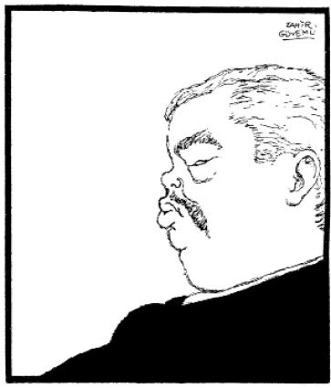

FERDİ TAYFUR İÇİN ORHAN BORAN, RADYODA “HOCAMDI” DEDİ
Ferdi Tayfur, daha sonra eşi olacak Melek Kobra ile Milyon Avcıları’nda, 1934.
Hep biliriz, tiyatroda yaşama vardır. Bu yaşama sadece yaşama mı olmalı? Yoksa aşamalı bir yaşama mı? Bence aşamalı bir yaşama. Günün tiyatrosu bunu veremiyorsa o tiyatroda iş yok demektir. Nutuk atmadan, ileri geri propaganda yapmadan, insanı insanda bularak, insanı insanla vererek, insanı insanla insan yaparak. Bunu sen yapmıştın, rahat.
Ve sen öldüğünde o gün, cenazende o gün, mezarlıkta o gün, biz bir grup arkadaş katıla katıla gülüyorduk. Senin büyük yaşantını, senin dünya anlayışını, senin ortamla alay edişini, senin bu toplumdaki büyüklüğünü düşünerek gülüyorduk. “Sarhoş bunlar,” dediler, nerdeyse kovacak, döveceklerdi mezarlıkta o gün bizi. Oysa biz seni yaşıyorduk o gün: Kemal Edige, Settar Körmükçü, Turan Seyfioğlu, ben, biz ve bizim arkadaşlar.
Seni ve seninle biz yaşamıştık. Hepimizin ağabeyi ve bir yerde hocasıydın. Sen de inanıyordun o günler topumuza. Ama sonra senden sesini çaldılar, işini çaldılar, elbiselerini çalıp giydiler, hatta karını çaldılar: Sen hep bilmezlikten, görmezlikten geldin. Adam yetiştirdin, nankörlük gördün. Bu bile büyüklüğüne ufacık örnek.
Orhan Boran unutmaz seni, ara sıra, “Hocamdı,” der. Radyolarda. Ama 12,5 lira yevmiyeyle iş verdiklerin köşk-araba sahibiyken, bugün bile senin kendi kendini yıktığını, esrar, eroin, kokain kullandığını, morfinman olduğunu demek iğrençliğinde bulunur. Sen elden ayaktan düştüğün günler, iş bulamadığın günler, iki kadehle sarhoş olup, benim göğsüme kapanıp çocuklar gibi hüngür hüngür ağladığın günler, bunları sen ayağa kaldırmıştın. En güzel suçun buydu senin. İnsanı insan etmek.
Ve siz oyuncular, ölürken bir gün, yaşadığınızı sandığınız bir gün, unutun tüm kötülüklerimizi; düşünün ben buna iyilik mi ettim, ben buna kötülük mü ettim? diye.
Rahatlarsınız hiç değilse. Aç insan sesleri duyun, muhtaç insan sesleri duyun, isterseniz kurbağa sesleri duyun. Ama insan sesi duyun biraz. İnsansanız biraz. Niyetliyseniz adamlığa.
Hiç değilse siz, Ferdi Tayfur’u saygıyla anın biraz. Siz köyden gelip de onun dilinden, onun elinden, onun işinden ekmek yiyen, yetişen, kat araba sahibi olan, sen, sen, sen sen! Anın onu, utanın biraz. Mezarına uğrayın arada. İnsansanız!
Ben, “Aktör gidiyor, dekorlar kalıyor,” dediğim günler, Ankara’dan İstanbul’a geldiğim günler, elimden tutanlardan biri sendin. Bende şair değerleri görüp, oyuncu değerleri bulup eğitmeye, yüceltmeye çalışan sendin.
Bugün seni hatırlamayanların çoğuna yolu gösteren sendin. Aynı sen, herkesçe terk edildiğin, yalnız bırakıldığın günler yalnız acındın onlara. Onlar beyin mastürbasyonuyla uğraşırken, seviniyorlardı bir yer boşaldı diye senden. Sen tepetakla olmuştun artık.
Sen, lapa lapa kar yağarken bir gün, biraz ısınabilmek için bir gün, günü geçmiş eski gazetelerini sobaya doldurup yakıyordun. Ağlıyordun da, sonra:
– Gözlerime duman kaçtı, diyordun.
Bunu derken ve yaparken bile kapını çalacaklarına, “Nasılsın Ferdi? Bir şeye ihtiyacın var mı Ferdi?” diyeceklerine inanıyordun. Hâlâ seviyordun çünkü bu nankör insanoğullarını. Sen günü geçmiş gazetelerle ısınıyordun.
Senin bir köpek hikâyen vardır, bir de sürrealist [gerçeküstü] bir rüyan.. İkisini de hiç unutamam.. Dublaj (seslendirme) yapıyorduk bir gün İpek Film Stüdyosu’nda. İki gözün iki çeşme gelmiştin bir öğleden sonra:
– Bugün paydos çocuklar! dedin, bugün paydos!
Arkasını getiremedin, lafın boğazına düğümlenmiş ağlıyordun. Sonra kız kardeşin Adalet Cimcoz:
– Köpeğini öldürttü bugün, çok üzüntülü. Herkese saldırıyormuş, hastaneye götürdü. Başka çaresi yokmuş, öldürmüşler köpeği, dedi.
Sen değil insanlara, köpeklere bile ağlıyordun.
Bir sabah evden gelip almıştın beni, taksiyle:
– Sesim kısık bugün, beni sen konuşacaksın, diyerek.
Baktım, sesin kısık filan değildi. Canın öyle istemişti. Gençlere devrediyordun yavaş yavaş işi. Hep iyiliğinden, gene büyüklüğünden. Adamdın.
– Bir rüya anlatacağım sana, demiştin. Dün gece gördüm garip bir rüya. Karnım bir ekmek fırını, alev alev yanıyor içi. Alevler yükseliyor, alevler alçalıyor. Hamurkârlar bir yanda harıl harıl çalışıyor. Uzun fırın kürekleri girip çıkıyor karnıma. Pişmiş ekmekleri çekiyor bu kürekler karnımın içinden. Hamur ekmekler sürülüyor karnımın yanan fırınına. Karnımın fırın kapağı kapanıyor, karnımın fırın kapağı açılıyor. Alevler fışkırıyor dışarı. Kamyonlar, arabalar yanaşıyor karnımın fırınına. Ekmekler yükleniyor yükleniyor; sıcak sıcak ekmekler. Kamyonlar gidiyor kamyonlar geliyor. İnsanlar çalışıyor durmadan karnımın fırınında. Tüm açları doyuracak kadar ekmek taşınıyor karnımın fırınından. Kürekler girip çıktıkça karnımın fırınına, alevler ısıttıkça ısıtıyor. Buram buram terlemeye başlıyorum, yanmaya başlıyorum, bir de gözlerimi açıyorum ki yorgan alev almış üstümde. Sigara elimde sızıp kalmışım. Parmaklarımdan yorgana düşmüş sigara, uyuyakalmışım. Yorgunluktan.
Su altında, su aramaya benzer seni anmak, seni hatırlamak.
Su ne kadar derinse sen, o boy büyük.
Sen haklı olanın, daima yenilen olduğuna inananlardan biriydin.
Yenildin.
Ben de seninle.
Orhan Boran ile İnci Körmükçü, Kanlı Döşek’te, 1949.
Akşam, 26.7.1968, s. 5
YAŞAR ÖZSOY, EKSERİYA
HERKESTEN ARTA KALAN
ROLÜ ALIRDI
Kimse kimseye yutturmasın: Tiyatroda yanlış affedilmeyecek. Biz ölmüşüz kardeşim. Yanlışı yanlış örtemez.
Dünya üzerinde gezdirilen bu geniş aynada, tiyatro denilen bu büyük aynada bizler insanlara kendilerini gösteriyorduk. Hangi insanlar, hangi insanlara. Ebedi olan insan, yaşasa yaşasa tiyatroda yaşardı. Yaşayanlara yaşayan, yaşatan insan kimin umurunda? Yaşamış, yaşamamış oyuncu kimin umurunda? Gidenlerin yerini gelenler dolduruyor sözüm ona: Balıkçının yerini balıkçı, lostracının yerini lostracı, şairin yerini şair, kaptanın yerini kaptan, ağacın yerini ağaç, dostun yerini dost (eğer varsa, bulunursa), düşmanın yerini düşman, tarihin yerini tarih, aktörün yerini aktör. Ötesi kimin umurunda?
Ölümsüz olan gerçek olandır, biz gerçek değiliz. Biz gerçek aktör değiliz. Gerçek aktör insandı. Biz gerçek insan değiliz. Biz kendimize de yalan söylüyoruz, biz bu değiliz. Tiyatroda gerçekler yaşar, biz gerçekleri yaşamıyoruz. Aktör, kendinin olmayan, olamayan satılmış adam. Kaderimizle, ruhumuzla, suratımızla başkalarınınız. Biz yaşamıyoruz.
Yıpranmış hayatı her gün yeniden yaşıyordu. Merdivenleri çıktı. “Yavaş, perde açık” levhası altında ellerini kalçalarına dayayarak doğruldu, yorgunluk aldı, mırıldandı:
– Geç kalmadık ya?..
– Geç kalmadın, perde yeni açıldı!..
Dar sahne koridoruna çepeçevre sıralanan makyaj odalarının hemen her birinde ayrı ayrı yaşamıştı. Yıllar geçtikce, yılları kirli bir mendil gibi bir kenara attıkça, meslekte yıprana yıprana hayatından bezmişcesine bu duruma gelmişti.
Gözlerini, belki yüzlerce defa geçtiği bu koridorun derinliğinden ayaklarına eğdi:
– Gene yağmur çiseliyor, paçalarım kirlendi, dedi.
Eski bir aktördü, usta bir aktördü, iyi bir aktördü. Hem de çok iyi bir aktördü. Şöhreti pek büyük pek yaygın değildi. Çünkü önüne setler çekilmişti Yaşar Nezihî Özsoy’un. Yolları tıkalıydı. Küçük Kemal’ler, Mahmut Moralı’lar, Vasfi Rıza’lar kapamıştı Yaşar Özsoy’un önünü. Onları çoktan aşıp geçebilirdi ve o potansiyele de sahipti.
Gel gelelim yollar tıkanmıştı o devrede bir kere. Ne deseler ne yapsalar boynu büküktü. Roller mi dağılacak, önce onlar sonra Yaşar Özsoy gelirdi elbet akla. Çelebi adamdı, mahzundu hep, gözleri ağlamaklı gibiydi hep. Orta boylu, ince yapılıydı, büyük bir başı vardı. Commedia dell’Arte tiplerindeki bir baş ve surat. Mask gibi derin çizgilerle iri iri çizilmiş bir surat.
Beyoğlu Balıkpazarı’nın o dar, o uğultulu, yağ kokulu meyhanelerinin birinde onu görmek mümkündü sık sık. Rakısını sulu içerdi. Ufak tefek biraz mezeyle kadehinin başında yalnız bulurduk onu hep. Ağlamaklı gözleriyle bakar bakar, yüzü biraz gülümserdi neden sonra. Haklarımızın yenildiğinden, sömürüldüğümüzden yakınırdı: “Yetmiyor bu para, yetmiyor bu kazanç!” derdi. Çocukca kaprisler yapmasına rağmen Raşit Rıza’ya hayrandı. Kadınlardan yana şansı yoktu. Herkesi severdi veya öyle görünürdü.
Her şeye razı olmuşcasına, ezikliğine, yenilgisine kızar; “Biz yaşamıyoruz ki! Yaşıyor muyuz ki? At kuyruğunda sinek gibi!” derdi. Birkaç kadehten sonra olurdu bunlar.
Şiir severdi, hikâye severdi. Bilmez gibi görünür, bilirdi. Anlamaz gibi görünür, anlardı. Vurdumduymaz gibi görünür, ama çok hassastı. Sait Faik’le ahbaptı. Belki okul sıralarından, belki Ankara Caddesi’ndeki kitapçı Mustafa’dan, belki Meşrutiyet Caddesi’ndeki şarapçı Mustafa’dan.
Oynadığı her rolün hakkını vererek oynamıştır. “Bu rol küçük, bu rol büyük, bu rol iyi, bu rol kötü” demeden. İnsanların yüzyıllar boyu kalleşce söyleştikleri sözlerle pişmişti o sahnede. Güneşte pişmiş bir kerpiç gibi tiyatroda pişmişti o.
Denizden boş ağlarla dönse de, ertesi gün gene balığa çıkmak zorunda olan balıkçılar gibiydi o.
Yaşamak zorundaydı bir hırkaya, bir lokmaya. Balıkçı denizde, o sahnede. 1902’de doğmuş, 1961’de öldü. İtelenip kakılmış, ezilmiş oyuncu kuşağının en sevdiklerimden biriydi.
Şair olduğumu bilirdi. Bana şiir söyletirdi arada bir.
Neden bilmem, bir şiir söylemek geldi birden ona içimden:
Ve bu dünyada varsan
Sor ne soracaksan.
Sorma sormayacaksan
Lâğım akıyor burdan
Sorma hiç vara bırakma
Lâğım akıyor burdan
Ve bu dünyada varsan
Sor ne soracaksan.*
İşte “Homer’in dediği”...
Sana son şiirlerimden biri...
Sen ölçülü, tam; bence büyük aktördün.
Yolunu tıkamasalardı.
Akşam, 27.7.1968, s. 5
* Cahit Irgat’ın bu şiiri, Irgatın Türküsü’nde yer almıyor.
Perihan Yanal (1916-1954)
Çizgi Zahir Güvemli
PERİHAN YANAL GÜZELDİ, ÇALIŞKANDI, HIRSLI VE
CANA YAKINDI
Gün ışıdı çöplükte
Ben kaçıncı kattayım.
Işıktan son gelenim
Terinim, ellerinim
Elin elime katık.
Martılar denizden itik
Ne arıyorsun, ne?
Gün ışıdı çöplükte.
Tanıyorum dünyayı
Aç oynamıyor ayı1
Gün ışıdı çöplükte
Ben kaçıncı kattayım.
Geceden kalma, hafif çakırkeyif gelmişti o sabah, saat onda provaya. Mahmut Moralı ağabeyimiz. Onda şeytan tüyü mü vardı o sıra? Çok mu sevilirdi çevresinde? Nedenlerini bilemem, hoş görülürdü yaptığı. Ayıp.
– Mahmut, doğru söyle, ne kadar içtin gene dün gece? diyordu Muhsin Ertuğrul. Yarı şaka, yarı ciddi. Ayıp.
– Vallahi efendim, ne kadar içtiğimi pek hatırlayamıyorum, ama kimler, kimler yoktu dün gece Garden Bar’da. (Garden Bar, Tepebaşı Tiyatrosu yanında, şimdi park gibi olan yerdeydi. İstanbul’un en lüks yerlerinden biriydi. Şarkıcı Zozo Dalmas’lar, Milton’lar, Bubul’lar hep oraya gelirdi.2) Ama görseniz, ah bir görseniz! Vallahi sizi de götüreceğim bir gece! Ben gene âşığım, bir içim suydu gene dün gece. Bir içim su.
İki eli karnı üstünde, bir saygı duruşunda söylüyordu bunları, Mahmut Moralı.
Pek uzun bir süre geçmemişti aradan. Günlerden bir gün tiyatroda çekik gözlü, sarışın, güzel bir kız görünüverdi. Derken, hiç sıra gözetilmeden, biraz çalıştırılarak başrollere çıkmaya başladı bu güzel. Ve derken fiskoslar başladı, aldı yürüdü bir sıra, sonra suspus oldu herkes. Toz kondurulmamaya başlandı ona. Bir kişiliği olmuştu Garden Bar’dan gelen kadının. Şehir Tiyatrosu komedi bölümünün genç kadın rollerini oynamaya başlamıştı sırtı sıra. Çalışkandı, cana yakındı, güzeldi. Bilmek, öğrenmek ve başarı kazanmak hırsıyla elde edivermişti birçok şeyi. Sonra atlaması gereken dikleri aştı, varılması gereken yerleri bildi. Roller verildi durmadan; oynadı, oynadı. Ama olmak, gerçek oyuncu olmak zordu bu işte. O gerçek aktris’i olamadı, ona yaramadı, erişemedi.
Dört yaş büyükmüş benden, sonraları öğrendim. 1912’de doğmuş o. Sonra sonra, para biriktirmişti galiba. Duyduğuma göre, bir yer filan almıştı. Sonra evlenmiş, boşanmış mı, hâlâ tam bilmiyorum. 1954’te ölüverince belki birkaç fotoğrafı kalmıştı, belki bir apartman katı. Kalırsa, bir de bu yazdıklarım. Ama sanatçı olarak ondan bir şey kaldığına inanmam.
Albert Camus, “Büyük sanat yapıtları yüzyıllar boyunca yaşar. Oysa bir tiyatro yapıtı geçicidir. Bunun için tiyatrocular bu kısa ömürlü, çabuk ölen sanat türüne büyük bir sevgiyle bağlanırlar,” der.
Perihan Yanal bu kısa ömürlü, çabuk ölen sanat türüne tesadüfen girdi, çabuk oldu, kısa ömürlü oldu.
Gene Camus, gerçeği öncelikle tiyatroda buluyor. Perihan Yanal bu işe geç girmeseydi, geç başlamasaydı, kırk iki yaşında ölmeseydi, gerçek sanatçı yoluna girebilirdi: gerçek bir sanatçı da olabilirdi belki.
Görevlisinden çok şey bekleyen bu meslek, dün tehlikedeydi. Bugün daha da tehlikede.
Tiyatroda bir seviyenin ya üstüne çıkılır, ya da altına düşülür. Bu tehlikeli sanata tavsiyeyle girip, pistonla girip seviyenin üstüne çıkmak çok güçtür, hatta imkânsızdır. Öyleyse alta düşmemek için orta çizgiyi yakalamaya bakmalı. Perihan Yanal da hep bunu yapmaya çalıştı.
“Gerçeği öğrenmek, onu sahnede bulmakla mümkün.”
Perihan, onu sahnede bulamadı, gerçeği öğrenemeden öldü.
Tiyatro, aranılan dostluğu verir insana. Ama gerçek tiyatro. Gerçek tiyatroda gerçek dayanışma şarttır. Herkesin birbirine ihtiyacı vardır tiyatroda. Sevgiyle beslenen bir dayanışma. Bu işin temeli budur. Bu temelin üstüne kurulan sevgide Perihan Yanal’ın da sevgisi vardı elbet.
Dekora, spotlara, saksılara, çiçeklere nasıl ihtiyaç varsa tiyatroda, güzel kadına da var elbet.
Akşam, 28.7.1968, s. 5
1 Cahit Irgat’ın, “Kuşbakışı” başlıklı şiirinin bu dizesi, kitapta şöyledir: “Aç oynuyor ayı”. (Irgatın Türküsü - Bütün Şiirleri, s. 139.)
2 Garden Bar’ın bugünkü yeri, Tepebaşı’ndaki eski TÜYAP binasının önündeki geniş alandır.

Emin Beliğ Belli (1894-1941)
Emin Beliğ Belli ve oğlu Hamit.
EMİN BELİĞ, YARDIM SEVEN, İLERİYİ GÖREN EŞSİZ
BİR SANATÇIYDI
Emin Beliğ Belli
Bir hikâyem var, bunu size anlatmalıyım.
Gece, en sevdiğim zaman, en korktuğum, yalnızlığımı en duyduğum zamandır. Bir pire havalandı yorganımdan, bir sıçradı, iki sıçradı, parmaklarımın arasına yapıştı. Ezdim, gecenin sümük parçasını ezer gibi. İğrendim, kalktım, otel odasında bir dolandım, iki dolandım. Sular kesikti, elimi yüzümü yıkayamadım. Sabah oluyordu. Gün bembeyazlaşacak birazdan. Ana avrat düz giden gün dolup taşacak. Gene umut yok, gene bir oyuncu arkadaşa yazdığımdan ses çıkmayacak. Düşenin dostu olmaz diyecek belki kendine. Herkesin kazancı ancak kendine göre diyecek belki bu dar günde. Zor zamanlar yaşıyoruz diyecek, hayat pahalı, kazançlar az diyecek. Bok gibi para kazanıyordu, yemeseydi diyecek.
Bir bardak şarap olsa şimdi. Bir bardak az, bir şişe olmalı, şarap hafif içki. Bir ufak yassı konyak! Pırıl pırıl olur her şey gene. O eski dostlar çevremi bayram eder. Oh Allahım, bir yudum, bir yudum.
Arabalı vapurların deniz seslerini duyuyorum. Gürül gürül, mavi mavi. Karşıya gidiyorlar, ya dönüyorlar. Yazdığım mektuplardan birini almıştır bir dost. Belki o vardır bu vapurda. Sabah erken erken gelecek, “Kalk,” diyecek, “nedir bu odanın pis kokusu?” Pencereleri açacak, odayı havalandıracak. “Deli misin sen. Burda yatılır mı aylarca? Bu otel odasında, tek başına? İçki öldürür,” diyecek, “Bırak şu boku,” diyecek. “Silkin, kendine gel, kendini yen,” diyecek. “Sen kendini yenersen sana iş mi yok!” diyecek.
– Ama ben işe yaramam artık, diyeceğim.
– Yararsın, bak gör, diyecek.
Bir yudum alkol olsa şimdi, bir yudum içsem, kendime geleceğim. Hemen oynayabileceğim sanki yeniden. Ama bu vapurların birinden çıkacak bir arkadaşım. Gelecek, bekle. Bu kapı açılıverecek birden. Soğuk olmayacak, rüzgâr olmayacak giren. Bir arkadaş sıcaklığı, sevgi dolduracak her şeyimi, yaşamaya başlayacağım sevinçle, cesaretle, umarak, mutluluk başlayacak yeniden.
Gün başlamıştı. Sonra, oteli insan ve ayak sesleri, balgamla öksürükler dolduruyor, sonra birden boşalıyor, sessizlik çöküyordu otelin her yerine. Sonra Üsküdar’a kar yağıyorda, camlar buz tutuyor, mahmuzlarını şakırdatıyordu. Bir ayak sesi vardı dışarda, arkadaşım olmalıydı, beni bu soğuk odada, yatakta, bu durumda görmemeli.
Ayak sesi durmuştu. Hem de kapımda. Odur o, başka kim olabilir ki. Kapı vuruldu, tamam, artık kurtulmuştum. “Gel” diyeceklerdi bana, “gel”.
– İşte sana sıcak bir oda. Bu da rolün. İşte kâğıdın kalemin, bu da avansın.
– Açsana be kapıyı! Öldün mü yoksa!
Gene bir pire havalandı. Üsküdar’ın kuru ayva ağaçları kadar yorgundu bacaklarım. Zor açtım kapıyı.
– Bak, dedi otelci, bak dinle: Sana acıyorum ama bu oda bana lazım. Senin yüzünden müşteri kaçırıyorum. Hasta bir adam var diyorlar bu otelde. Odasından hiç çıkmıyor, sabahlara kadar konuşup duruyor kendi kendine. Bu yüzden gelmeyiz diyorlar. Çık git Allahını seversen, borcun da yok bana! Hemen şimdi çık git. Al, saatini de geri veriyorum. Ağaç gölgesi değil, otel burası!
Kulağıma bir pire kaçmıştı. Vurdum kulağıma, avucumda bacaklarını titretiyordu pire.
İstanbul’a kar yağıyordu. Son yalnızdım artık kendimle. Köprü altında balık satıyordum. Islak bir teknenin içindeydim vıcık vıcık. Gözüm görmüyordu kardan, bağırıyordum:
– Liraya, liraya, liraya!..
Atmıştım birini bir adamın ütülü pantolonlu pabuçlarına. İstemeyerek olmuştu bu.
– Alay etme benimle! dedi, film mi çeviriyorsun?
Geçti gitti, eski bir arkadaştı. Devetüyü paltosuna iyice gömülmüştü.
– Dur! dedim ardından.
– İşim var, dedi, geç bile kaldım.
Baktım balıkların gözlerine, ağlamaklıydılar. Kim bilir, ben de ağlıyor muydum ne?
O, köprünün ortalarına varıyordu. Birden durdu, birkaç adım geriledi. Başını devetüyü yakalarından biraz uzattı:
– Benim için bir çift sakla, akşama geçerken alırım.
Kırmızı turp, roka, rakı gibi bir şeyler de dedi galiba.
İstanbul’a kar yağıyordu.
Nice karlar yağdı bu İstanbul’a... Bu kaçıncı kıştı kim bilir? Bu benim ufacık bir hikâyemdir, otuz yıl sonra başa gelen. Bu böyle mi olmalıydı? Bu böyle mi sürüp gidecek?
Biz üçüncü sınıf oyuncuyken o sıralar, sen bize birinci sınıf sevgisi göstermiştin. Sen bu eylemde ne olunup ne olunmayacağını görmüştün, bilmiştin, Emin Beliğ.
Bir gün bir adam çıkıverdi ortaya, bir oyuncu, bu sendin:
– Ben bu işin artık adamı olmayacağım, dedin. Ben doktordum, ihtisasımı yapacağım, dedin ve yaptın. Sahne hizmetini bitirmiş, hastanelerde başlamıştın hizmete. Bir acılı insanları bırakmış, bir acılı insanlara adamıştın kendini.
Bir gün ben de hastalanmıştım her insan gibi. Elimden tutmuştun, doktor doktor gezdirmiştin beni. Oysa sen de doktordun. “Hayır,” diyordun, “bu onların ihtisası.” İlaçlarımı koymuştun ceplerime, her gün hatırımı sormuştun. Yalnız benim mi? Kim çalmışsa kapını, senden kim yardım istemişse. Genç olsun, yaşlı olsun, hali ne olursa olsun, yeter ki insan olsun.
O günden bugünü, tiyatronun bugününü görmüş olacaksın. Evet, o günden bugünü görmüştün, onun için doktorluğa dönmüştün.
1894’te doğmuş, 1941’de öldü.
Ben beş-altı yıllık oyuncuyken.
İstanbul’a kar yağıyordu...
Mahmut Moralı (1902-1969)
Mahmut Moralı
Çizgi Zahir Güvemli
Akşam, 29.7.1968, s. 5
BÜYÜK İNİŞ-ÇIKIŞ BULAMADIM MAHMUT MORALI’NIN HAYATINDA
Kronolojik veya alfabetik bir sıra gözetmeden, duygusal bir açıdan yazılan bu yazılarda Mahmut Moralı buraya rastladı. Hiçbir art düşünce olmadan. Oysa Mahmut Moralı’yı duygu bakımından da, yakınlık bakımından da birçoklarından önce tanımışımdır. Aramızdaki yaş farkına rağmen, her ikimizin de bekârlık zamanlarımıza rastlayan hovardalıklarımız bir ara almış yürümüştü. Gençlik yılları, heyecan yılları... Gece hayatı, bar hayatı, alaturka âlemler... Neyzen Tevfik geceleri, Selâhattin Pınar’lı geceler, Feyzi Aslangil’li, Kadri Şençalar’lı geceler. Sohbetler, münakaşalar ve geriye hiçbir şey kalmayan boş geceler. Bir yerde boşa akmış, boşa harcanmış bir ömür.
Daha geçenlerde yaşı otuz olan bir kadın meslektaş, “Ben tanımıştım Mahmut Moralı’yı, nesi yazılırmış onun da,” dedi. “Öyle deme, onun da bir hayatı var tiyatromuzda,” dedim. O dudak büktü, “Beni etkilemez onun tiyatromuzda yaptığı,” dedi ve geçti.
Uzun yıllar, çok uzun yıllar hiçbir şansı olmamış tiyatroda Mahmut Moralı’nın. Vurmuş kendini içkiye. Şakaya, şaklabanlığa, hayatı kolaya almaya. Sonra Küçük Kemal’in oynadığı rollerin çoğu ona verilmeye başlamış sırayla. Orta oynamış, iyi oynamış. Sevdirmiş kendini. Para kazanmak isterdi, çok para kazanmak isterdi. O zaman toto filan yoktu, piyango bileti alırdı her ay. Bir iki değil, on tane birden, yirmi tane birden alırdı. Bir ay ona bin lira çıktı. İyi paraydı o zaman. Büyük aylıklar yüz lira olduğu sıralar. Daha sonra beş bin lira kazandı. Daha sonra on bin. Ve bir ay da yüz bin birden. Bir apartman almıştı. Şişli’deydi galiba. Bir de yazlık bir kat, Pendik’te sanırsam. Sonra içkiyi azalttı yavaş yavaş. Artık rahattı. Arasam da tarasam da büyük iniş çıkışlar bulamam Mahmut Moralı’nın hayatında, bu piyango çıkışlarından başka. Düz bir hayat yaşadı, büyük şeyler yapamadan gitti. Okumayı sevmezdi. Bir tohum gibi gelmişti, ağaç olamadı. Ne bir Hâzım olabildi, ne bir zirve, ne bir uç. Sallandı durdu ortalık yerde.
Rıza isimli çok oyuncu gelmiş Türk tiyatrosuna: Kâmil Rıza, Raşit Rıza, Vasfı Rıza gibi, Mahmut Rıza bunların sonuncusu. 1902’de doğmuş, 1955’te öldü. Pendik’teki evinde.
Ben, benim tanıdıklarımı yazmaya çalıştım sahnelerde ölenlerin. Niceleri var daha adını duyup tanımadıklarımın. Bir hatıra, bir his, bir yaşantı bu yazdıklarım.
Çok gocunanlar, kızanlar da olmuştur bu yazılara. Yazarken bile duyuyorum bunu. Ne yapalım ki gerçek bunlar, elde değil tersini yazmak. Tiyatroda yanlış affedilmeyecektir bir gün. Yani, yanlış tiyatro affedilmeyecektir. İnsan için yapılmayan tiyatro affedilmeyecektir.
Doğru tiyatroyu, gerçek tiyatro yapmaya gelenler de vardı tiyatromuza. İşte bir Asaf Çiyiltepe. O bize bugünün tiyatrosunu değil yalnız, yarının, yarınların tiyatrosunu da müjdelemişti. Onu en büyük sancımla selamlarken bu yazımı Asturias’ın sözleriyle bitiriyorum:
“Nerede tiyatro varsa, orada sözler kalır. İnsanın tanrılarla, insanın dünya ile, insanın insanla konuşmasının sözleri. Yüzyılların dili tiyatroda, birçok değişikliklerden sonra, yeniden halk topluluklarına ulaşma aracı olur: En insancıl, en kestirme, en etkili, en verimli araç.
“Dinsel tören, kutsal temsil, yaratmanın oluşu, edebiyat türü, bütün bunlar tiyatrodur, tiyatro olarak kalmıştır.
“Yeniden doğma yolunda olan kültürlerin, Guatemala’nın Maya kültürü gibi, bin yıllık bir tiyatro geleneği kültürlerinin insanı olarak ben burada yürekleri güneşe kadar yükselten sırça bıçakların hayalini değil, kahramanlık tiyatrosunun büyük temsillerinin anlarını, ebediliğin taş içine fotoğrafını çektiği tüy, çıngırak ve duman danslarını; uykusuzluktan, yorgunluktan yıkılıncaya kadar, günlerce, haftalarca dans eden bütün toplulukların o coşkun kutlamalarını anıyorum.
“İşte, başka güneşlerin insanı, ben bu dünyadan başlayarak, tiyatro mucizesinin yaratıcılarına ve seyircilerine sesleniyorum; onları zincirler yapmak için değil, karşılıklı anlayış köprülerini kurmak için, el ele vermeye çağırıyorum.”
Akşam, 30.7.1968, s. 5
FİGÜRAN
Geceye gömülmüş bir gemi gibi
Donmuş soğuklarda iliği
Bedende ne setresi ne yeleği
Tek umudu tiyatrodan.
Gelsin piyaz, yüz sapsarı
Bir lokmadır çıkarı
Bir düş Eski Roma, Eski Yunan
Çıktı tiyatrodan figüran.
İlk sevgi merhamette dönenen
Sevgiler çerden çöpten
Kaçılmaz saplanılmış bir kez
Müttehidülmerkez.
Irgatın Türküsü, s. 203
Lâmbo’nun Meyhanesi’nde Mim Uykusuz, Haluk Yetiş,
arkada Cahit Irgat ve Kemal Edige (1964).
TİYATRODA BİR DE HİÇ ADI
DUYULMAMIŞ ŞÖHRETLER VARDIR
Acılı yorgun oyuncuların yanı sıra, kristalleşmiş gerçeklerin ardında bir de kalker tortuları vardı tiyatroda. Bunların adı sanı duyulmamıştır pek ortalıkta. Onları bilse bilse tiyatro çevreleri bilir.
Bana en çok dokunan, tiyatronun en büyüğünden en küçüğüne kadar bütün aktörlerin, hatta figüranların bile, bir gün sahnede takılır sürçerim korkusu ile yalancı gözlerle baktıkları, tiyatronun her an rüyasını yaşayan suflörlerdi. Baş suflör Sadi Kündür’dü. Tiyatroya oyuncu olmak için girmiş, olmamış, olamamış, suflör kalmış. O günün tiyatrosunda zor ve büyük işti: Suflörlük. Çünkü bugünkü gibi haftalar haftası, aylar ayı prova edilmezdi bir oyun. Bilemedin, on beş günde bir oyun değişirdi. Sonra sonra bir ay, beş hafta, bir buçuk ay oynanabilmeye başlamıştı oyunlar. Bu yüzden suflörün, suflörlerin işi ağırdı tiyatroda. Üç suflörü vardı tiyatronun: Sadi Kündür, Fikri Çöze, Refika Erül.
Sadi Kündür: 1905’te doğmuş, 1956’da alkolden ve veremden öldü.
Refika Hanım büyüğümüzdür yaşıyor.
Fikri Çöze yaşıtımdır.
Provaları, çocuk tiyatrosunu, tarihi matineleri, gündüz oyunlarını, gece oyunlarını bu üç suflör nöbetleşe idare ederlerdi. Sahne tozunu yutarak kan ter içinde umudunu yitirmiş olarak.
Bir de aksesuvarist Hamdi vardı. Perde ardının en büyük sanatçılarından biriydi o. Olayın geçtiği tarih ne olursa olsun, o hemen kitaplara sarılır, bilmediğini sorar öğrenir, eşyayı, tabloyu, vazoyu, çamçağı1 ve bütün teferruatı yerli yerine zevkle koyar yerleştirirdi. Sahneye gelecek mektubun üstündeki pula kadar düşünür, o günün pulunu bulur yapıştırırdı zarfın üstüne. Çok titizdi, sanatının ehliydi Hamdi Şarlıgil. O da oyuncu olmak için gelmiş tiyatroya, Talât Artemel’le aynı gün. Talât aksesuvarcı, Hamdi oyuncu olmaya. Ama yer değiştirmişler elde olmadan. Hamdi de 1905’te doğmuş, 1966’da öldü.
Son zamanlarda filmlerde ufak tefek roller oynardı. Piposu ağzından düşmezdi hiç. Zarif adamdı, nükte üstüne nükte yağdırırdı. İyi bir babaydı, boyunca kitap ve kızlar bıraktı. Eliyle evlendirmişti kızlarını. Sonra onun yardımcısı Osman Türkoğlu. O da ondan birkaç gün önce gitti. Kimsesiz, hiç kimsesiz. Rusya’da okumuş, oralı, yani oradan gelmiş; o da son zamanlarda filmlerde oynardı.
Ve sonra Koca Adnan. Tiyatro’nun makinisti Adnan Görgüç. Bir yardımcıyla kurar söker, tekrar kurardı koca koca dekorları. O tarihi dekorları, tüm klasiklerden 1966’ya kadar Şehir Tiyatrosu’nda oynanan oyunların dekorlarını. Hastaydı son zamanlarda, kanser demişlerdi. İnsan verem de olur kanser de bu sanatta.
Bir de [Nickolay] Peroff vardı, büyük adam Peroff. Bildim bileli o yapmış, o realize etmişti Şehir Tiyatrosu dekorlarını. Türkiyede yerleşmiş bir beyaz Rustu. Tam tiyatro adamıydı bu adam. Çalışkan, işini bilen, hayatını tiyatroya adamış bir adam.
Adı sanı unutulmuş veya unutulmaya yüz tutmuş oyuncular da var. Kırk sene sahneye emeği geçmiş bir adam, kadavralaşmış tekaüdiyesiz aktör ay başı geldi mi tiyatronun çevresinde dolanır durur. Çöplükte nafaka arayan bir köpek gibi. Kocamış bir köpek gibi. Düşkün Aktörlere Yardım Sandığı’ndan aldığı otuz papeli cebine yerleştirip bu para ile ayın otuz gününde ne yapacağını düşünmek için şarapçının yolunu tutan aktörler de gördü bizim kuşak. Saffet Baba’lar, Hakkı Necir’ler, Pamuk İsmail’ler, Rasih Baba’lar gibi. Ve nicelerini.
Bunlar gibi ölüp gitmiş Selâhattin Moğol’lar, Neşet Ber-küren’ler, Salih Tozan’lar, Suphi Kaner’ler ve Kemal Edige’ler var benim kuşağımdan.
1910’da doğup 1963’te ölen Reşit Baran’ı katmıyorum bunlara. O bu işin kahrını çekmedi. Galatasaray Lisesi’nden şıp diye giriverdi tiyatroya. İyi bir aylıkla hiç üzüntü duymadan, figüranlık yapmadan. Behzat Butak’ların, Vasfi Rıza’ların dümen suyundaydı hep. Çeviriler yapardı Labiola’den, oynanırdı çevirileri. Ona da tüm imkânlar, eşantiyon roller verildi, ama o hiçbir şey yapamadı. İyi bir oyuncu olamadan öldü gitti, yazık.
1963 yılı kırdı geçirdi bu genç oyuncuları. Art arda.
Selâhattin Moğol: 1912’de doğmuş [ö. 21.7.1963]. Benden eskiydi tiyatroda. Kompleksler içindeydi. Acılar içindeydi. Kendi kendine yarattığı acılar içinde. Hep ufak tefek roller oynadı, adımını hiç açamadı, gelenleri kıskandı gidenleri kıskandı, kendini yedi bitirdi. Ruhen hastaydı son senelerde. Kötülüğü hep kendineydi, huzursuzluklar içinde. Çevresini, ortamını bulamadı.
Neşet Berküren [1911-1963]: Ondan bir yaş büyüktü. Aynı yıl öldü Selâhattin’le, gırtlak kanserinden. O, Selâhattin’in tam tersine neşeliydi, babacandı, dobraydı, çocuk gibiydi. Hatta biraz geri zekâlı da diyebiliriz Neşet’e. Sevilirdi herkesçe. Ona da oldukça fırsat düştü sahnede. Son yılları hastalıkla geçtiğinden belki o kadardı vereceği. Bir sözünü hatırladım şu anda:
Ayak Takımı Arasında’da2 “Medvire del”i oynuyordu.
– Neşet be, bu güzelim rol böyle mi oynanır? demişti bir arkadaşı.
– Beğenmedin mi? Bu maaşa bu kadar oynanır işte!.. cevabını vermişti.
Bu maaşa bu kadar oyun!
Bu söz onun iş anlayışını gösterirdi bir bakıma. Bir bakıma da tiyatro kazançlarını. İyi oyuncu olabilirdi.
İnsan yüreğinin üstüne basılmayagörsün, dolu bir zemberek gibi fırlar bir gün o yürek. Değişen bir şey yok pek, o günden bugüne. Değişen bir şey olmadığından işte, 18 Nisan 1967’de yaptığım bir röportajı aynen almak gereğini duydum buraya.Tanju Cılızoğlu’yla yaptığım röportajı; yorgun, acılı bir oyuncuyum ben de:
“Bu adam tiyatro sanatçısı. Bu adam şair. Bu adam elli yıllık yaşamı içersinde bir gün bile nasıl apartman sahibi olurum, nasıl altıma bir araba çekerim, nasıl fişmanca beye hulus çakarsam bir Avrupa seyahati ayarlarım diye düşünmemiş. Çok daha zor, çok daha gerçek, çok daha yüce bir tutkuya yaslamış tüm yaşamını. İnsanlara, ülkesinin yoksul insanlarına, ülkesinin perişanlığına, ülkesinin sancılarına nasıl yararlı olurum diye zorlamış yaşamını. Darlara düşmüş, ama tüketmemiş içinde çöreklenmiş halk sevgisini.
“Tüm bu anlattıklarını Cahit Irgat bir şiirinde yalın içten duygulu tek mısrada veriyor: ‘Ekmeğimi gözyaşıma bandım da yedim.’
“... Her okuldan kovuldum. Anarşist dediler kovdular. Nihilist dediler kovdular. Komünist dediler kovdular. Otuz bir yıldır aktörlük yapıyorum. Elimden lehimcilik gelmedi. Marangozluk gelmedi. Benim savaşım daha güçlü, daha düzenli, daha mutlu bir dünya yaratmak. Ama elli yıllık ömrü darlarda, zorlarda geçirdik. Ne olursa olsun, istediğim, dilediğim bir çizgide sürdürüyorum ömrümü. Savaşı bırakmadan, kavgadan kaçmadan.
“Elli yıllık bir yaşamın tüm zorlukları yıldırmamış, küstürmemiş ve yenik düşmemiş. Acısını şiirde kusmuş, tiyatroda bitirmiş. ‘Köyün insanına tiyatro gerek. Halka daha çok, daha çok tiyatro götürmek gerek. Tiyatro okuldur. Tiyatro kültür aracıdır...’”3
İnsan yüreğinin üstüne fazla basılmaya görsün, dolu bir zemberek gibi fırlar bir gün o yürek.
Ve Settar Körmükçü ve Kemal Edige ve Suphi Kaner ve Salih Tozan ve Ferdi Tayfur geçiyor önümde[n], yaşıyor hepsi şimdi.
Orhan Veli’yle Lâmbo’da şarap içiyorduk bir akşamüstü. Kemal Edige geldi Lâmbo’ya, kulağıma fısıldadı:
– Paran var mı?
Aramızda lafı edilmezdi böyle şeylerin.
Vardı.
– Var, dedim.
– Kendim için değil, dedi.
– Anladım, dedim.
– Fazla pabucun var mı? dedi.
– Var, dedim.
– Kravatın?
– Var, dedim.
– Elbisen?
– Var, dedim.
– Ya pardösün?
– İşte o fazla değil, dedim.
Sıkı bir yağmur yağıyordu Balıkpazarı’na.
Aldı pansiyonumun anahtarını elimden, çıktı gitti.
Tüm bunları kalbinin üstüne fazla basılmış biri için yapmış, Kemal Edige. O çekik gözleriyle, ince uzun boyuyla, biraz dik biraz sert, yalın, bu yüzden de herkesçe sevilmeyen ama bizce çok sevilen, billurlaşmış bir oyuncuydu Kemal Edige. En güzel dostlukları insanlık için yaşardı o.
Benim sanat kuşağımdan çıkmış, örnek bir kişiydi. Solcuydu, evet solcuydu, o zamanlar böyle rahatça konuşulmayan solculardan. Sonra ne oldu? Alkolik oldu dediler. Sonra ne oldu? Ölümünden önce hastanede bile içmiş, cebinden yassı konyak şişesi çıkmış dediler. Neden acaba? Neden? Bir gün de bir derdin mi var diyen mi olmuş, neden içiyorsun diyen mi olmuş. Küsmeden öldü üstelik, insanlara. Onu işsiz koyan insanlara, o acıyarak öldü, o insanlara, “insanlar”a.
Yoktum Settar’ın [Körmükçü] ölümünde Türkiye’de. “Kalbim sıkışıyor,” demiş, yatmış yatağına, karısı uyandıramamış sabaha karşı. Çoktan ölmüşmüş. Hani bana, büyük sanatçı Hâzım’ın, “Git oğluma, beraber yiyip için, dost olursunuz oğlumla,” dediği o Settar böyle ölmüş.
Kalbinin üstüne fazla basılanlardandı o da.
Ama dolu bir zemberek gibi fırlayamadı.
Suphi Kaner de öyle. Utanmadan intihar etti. Bu pis, bu rezil film piyasasına, açlığa, sıkıntıya bir balgam atamadı, tüküremedi, intihar etti.
Kalbimizin ortasında güvercin
Güvercinin kursağında bir kurşun
Kefenimiz arşın arşın
Parasıyla peşin peşin4
diyemedi. Demeliydi. Var mı böylesine gitmek dünyadan? Ve acır görünen bir yığın köstebeği? Sevindirmek? Ve,
– Gözüüüm!.. çeken Salih Tozan!
Neden içerdin bu kadar?
Paran mı yoktu cebinde? Onun bunun masasına tünerdin? Alay ederdin insanla, o insanların dünyasıyla! Hak ederdi bu insanlar bunu! Ama seni de bir soytarı gibi görürlerdi. Karşılıklı ucuz bir alışverişti bu yaptığın senin. Yalanın, dedikodunun bini bir paraydı sende, tek ayaküstünde. Ama iyi sanatçıydın. Bunun tersi söylenemez senin için. Cıcığın çıkmadan öldüğüne iyi ettin.
İnsanları birbirine düşürmeye bayılırdı Salih. Bir ara işsiz kalmıştı. Adana Şehir Tiyatrosu kurulurken İstanbul’dan sanatçı toplama işi bana verilmişti. Nevin Seval’e ve ona rica etmiştim. Provalara geç, epey geç geldi Adana’ya. Ama iyi oynadı rolünü: Yılda beş aylık da caba [karşılıksız] veriliyordu o yıllar. Öyle bir punduna getirdi ki, birikmiş aylıklarını aldığı gibi bunları da toparladı, perde açılmasına birkaç saat kala çıkmış gitmişti Adana’dan. Sonra bir mektup almıştım ondan:
– Sanatçı garba gider, biz şarka gittik, dayanamadım kaçtım, kusura bakma!
İyi sanatçı Salih Tozan’ın bende bu hatırası kaldı.
Ben çok kişi tanıdım. Şiirde de, tiyatroda da. Gerçekten gerçekçi olabilselerdi, gerçekten kendilerine inansalardı, bugün bugünden öte biraz güzel, hiç değilse güzellik olurdu. Güzelcik.
Akşam, 31.7.1968, s. 5
1 çamçağ Su kabı.
2 Maksim Gorki’den Ayak Takımı Arasında, Vâlâ Nurettin’in çevirisiyle İBŞT’de ilk kez 1936-1937 sezonunda oynandı.
3 Cahit Irgat, sözünü ettiği röportajın sadece giriş bölümünü yazısına almıştır. Metnin tümü için bkz. “Ek Metinler”, s. 243-245.
4 Cahit Irgat, “Yaşamak”, Irgatın Türküsü, s. 99.
CAHİT SITKI, “OTUZ BEŞ YAŞ
ÖMRÜN YARISI EDER” DERDİ
Cahit Sıtkı Tarancı (1910-1956)
Sabahçı kahveleri, sabahçı pastaneleri Beyoğlu’nun. Nisuaz, Petrograd, Moskova pastaneleri. Son tramvaylar sızlanarak gelir geçer. İlk tramvaylar gelir geçer. Pastanelerin Rus kadın garsonları nöbet değiştirir sadece. Bir de kasadaki madam.
Alkazar, Şık, Yıldız sinemalarında otuz iki kısımlık tekmili birden macera filmleri oynardı o zaman. Şimdiki gibi Bond’lar değil. Sucukçular, köfteciler, amele börekçileri gene böyle gırlaydı Beyoğlu’nda. Yol tamirleri, tel tamirleri, kazılar gece yarılarından sonra yapılırdı gene. Muhabbet tellalları, çöpçatanlar, sokaklarda uyuyan çocuklar, çöp tenekeleri, aynı pislik, kokular, bugün gibi.
Moskova’ya da giderdik, Petrograd’a da. Ama daha çok Nisuaz’dı asıl yerimiz. Şimdi bir banka olan yer.1
Masalarda müşteri bekleyen efendi orospular, ressamlar, şairler, odaları sıcak olmadığı için bu kahvede çalışan bekârlar, aynı evin insanları gibi birbirlerini tanırlardı. Geceleyin orospular işlerin kesatlığından dert yanarken bir öbürü umudunu Allaha bağlamıştır. İyi tanıdıkları fakir şairlerle, ressamlarla, aktörlerle kardeş kardeş geçinirler. Bir şair kırk sekiz saattir ağzına bir şey koymadığından dert yanar, bir orospu ona borç verir, çay ve pasta ısmarlar. Ve patrondan bir plak çalmasını ister. Bu sırada üstü başı düzgün bir sarhoş yalpalayarak orospulara yaklaşır, yanlarına izinsiz ve teklifsizce çöker:
– Bu gece efkârlıyım, fazla kaçırmışım. Hanginiz gelirsiniz? diye sorar. Bir seçme yapmamıştır. O hepsine razıdır. Hepsi de ona. Geçim dünyası.
Ötede üstü başı dökülen biri:
– Açım! diye sızlanır. Eski bir derttir bu da. Açlık kapıları çalmıştır. Bugün gibi.
Gezginci bir piyango bayisi masa masa dolaşır:
– Çekiliyor! Yarından sonra çekiliyor! Alan kazanıyor!
Ve bir orospu bir bilet alır, bütün umudu yarından sonraya kalır. Sarhoş bu bilete ortak olur. Yarı para verilir, biletin arkası imzalanır. Sonra dertlenir:
– Bütün şehir şahittir o kadını sevdiğime! Yıkıldım artık, yıkıldım! Yedi bitirdi beni!
– Taktırdı mı? diye sorar kadının biri.
– Taktırdı! Ne yazık ki taktırdı!
Orospulardan biri iş bulmaktan umudu keser:
– Çocuk bekler! diye kalkar yerinden.
– Uyumuştur, bekler mi bu saate?
– Bekler, bekler yavrucak. Derslerine çalışmıştır, pencerede yolumu bekler. Adam olursa ne âlâ.
O da umudunu çocuğuna bağlamıştır. Kalan meslektaşına iyi işler dileğiyle evinin yolunu tutar.
Asım Bezirci bir yazısında bizlerden ve bizlerden öncekilerden bahsederken şöyle der: “Sembolistlerin yanı sıra parnasyenleri de tanıyan Yahya Kemal de –bir başka açıdan– öz şiire yönelir 1930-1940 arasında. Bu eğilim Necip Fazıl Kısakürek, Ahmet Hamdi Tanpınar, Ahmet Muhip Dranas, Cahit Sıtkı Tarancı gibi şairlerle sürdürülür. Bu şairlerin düşsel ve bireysel yanları ağır basar.
“Serbesçiler: Çoğu gerçekçi ve toplumcu olan bu şairler heceye ve aruza karşı özgür koşuğu (serbest nazım) tutarlar. Başta Nâzım olmak üzere, Nail V [Çakırhan], Ercüment Behzat [Lav], İlhami Bekir [Tez], Hasan İ[zzettin]. Dinamo, Asaf Halet Çelebi özgür koşuğa dayanan yeni, yıkıcı şiirler yayımlarlar, alışılmış şiirin –öz ve biçimce– bazı kalıplarını kırarlar. Onların ardından Cahit Saffet Irgat, A. Kadir, Suat Taşer, Rıfat Ilgaz, Ömer Faruk Toprak aynı yolda yürürler...”
İşte bu özcülerin ve serbestçilerin birçoğu gece veya gündüz Nisuaz’a uğramadan edemezlerdi. Serbestçiler ağır basıyordu. Çoğunluk onlardaydı. Serbestçilerin asıl kızdıkları hececilerdi. Değersizliklerini durmadan çarpıyorlardı suratlarına. Nitekim haklı çıktılar sonunda. Hececilerden bugün ortalıkta kimse kalmadığına göre. O gün de yoktular ki bugün olsunlar. Serbestçiler özcülerle dosttular. Bu dostluk, sevgi ve anlayış bugün de sürer gider. Birbirimizi hiç görmesek de.
Suphi Taşhan, Mehmet Kemal, Rıfat Ilgaz, A. Kadir, Arif Dino, Abidin Dino, Celâl Sılay, Celâlettin Ezine, Suavi Koçer, Ahmet Muhip ve başkaları ve sen baş gediklileriydik Nisuaz’ın. Ne Nisuvaz var şimdi, ne eski dostlar. Hasta toplumda darmadağınığız.
“Otuz beş yaş, ömrün yarısı eder” dedin. Etmedi, sen tok, mutlu bir toplumda yaşayan için düşünmüştün bunu. İki yıl çok çektikten sonra hasta yatağında, 1956’da Viyana’da öldün. Ankara’ya getirildin, gömüldün. Sait’ten iki yıl beri yanda. Oysa Sait umudu kesmişti 1954 başlarında senden.
Seninle hiç kavgalaşamadık. Nektar Birahanesi’nde buluşurduk çoğu akşamlar günümüz şairleriyle, sanatçılarıyla, dostlarıyla. Bir akşam seni vaktinden önce “olmuş” bulmuştuk. Rıfat Ilgaz’lı, Sait Faik’li bir masaydı oturduğumuz. Kadınlı erkekli toplumcu bir gruptuk. Sait’le ben ağız dalaşması yapmıştık. O basmıştı küfürü bana en sunturlusundan, bir de şişe kaldırmıştı, sonra çıkıp gitmişti. Sen ağlamıştın ardından, “Sanatçı dostlar kavgalaşır mı?” diye. Tutturmuştun, “Bir votka,” diye, ben sana suyu votka diye yutturmuştum. Bekâr Sokağı’nda oturuyordun o sıra.2 Soruyordu dostlar birbirine: “Cahit nasıl gidecek?” “Ben götürürüm,” demiştim. Bekâr Sokağı’ndaki pansiyonuna girmek istemiyordun o gece, diretiyordun. Haklıydın. Yalnızlıklar bekliyordu, umutsuzluklar bekliyordu seni odanda. İlle benim de kalmamı istiyordun, ille içki istiyordun. İlle bir şeye dayanmak, bir şeye tutunmak istiyordun, bir şeyle avunmak istiyordun.
Bu akşam ilk olarak ağladım
Bekâr odamın penceresinde.
Hani ev bark? Hani çoluk çocuk?
Ne geçti elime bu hayatın
Meyhanesinde, kerhanesinde?
Yatağım her gece böyle soğuk.
Saadet bu ömrün neresinde?3
Bekâr Sokak’ta,4 o pansiyon odasında yazmıştın bu “Garip Kişi”yi.
İnsan sevgisiyle yan yanaydın. Kavgalara, dargınlıklara karşıydın. Oysa hasta toplumda dövüş gerekiyordu sanatçı için. Mutlu günler için. Bir çeşit kaçış, içine kapanıştı seninki. Sen “barış” istiyordun, ama hep bireyci yönünden. Her şey kendiliğinden olsun istiyordun. Baudelaire’ler, Rimbaud’lar, Malarmé’ler kavramıştı seni. Bir de özel dostluklarla kurduğun şiir akımlarını tutuyordun. Ama inkâr götürmez, Nâzım Hikmet’e de hayrandın. Senin için şiirdi en önemli olan. Sanatçının kavgası değildi.
Ahmet Muhip’i gördükçe Ankara’da birkaç yılda bir, senden söz ederiz bir bulvar boyu. O hâlâ dalgınlıklar içindedir. Şahap Sıtkı [İlter] öyle. Fethi Giray öyle. Herkes bir hayhuy içinde yuvarlanıyor siz gideli. Kimi, şiiri çoktan bıraktı veya şiir onları. Dağıldık, bölündük, ayrıldık siz gideli. Kimimiz öldü, kimimiz zengin oldu, kimimiz Avrupa’da, kimimiz ekmek yolunda.
Buna bir kerecik gücenir gibi olmuştun belki. Senin şiirini cevaplandırdığım için, “Değil kardeşim değil,” diyordun sen, “Gök mavi değil, dal yeşil değil,” diyordun.
İnan kardeşim inan
Gök mavidir, dal yeşil
[Omuzun omuzumda]
[Nefesin nefesimde]
Gökyüzünü yıldız yıldız
Dilim dilim bölüşürüz yeryüzünü,
Payına düşen dertler
Payıma düşer
Sen benim günümdesin
Ben senin gecende,
Bir ucu sende denizin
Bir ucu bende
İnan kardeşim inan
Aynı suda yüzer bindiğimiz gemiler5
diyordum ben. Ama sonra gene, hep “adaş” olarak kalmıştık. En dar, en zor günlerde de.
Paris’ten dönüşümün on altıncı sabahı götürülmüştüm. Oysa Rüzgârlarım Konuşuyor çıkalı yıllar olmuştu. Basın kanununa göre yargılanamazdım. Çünkü basın kanunu, basılışından altı ay sonra bir kitap için koğuşturma açtır[a]maz. Bu süre aşılmıştı, çok aşılmıştı. Ama benim cezalandırılmam lüzumluydu, şarttı. Ankara’ya götürüldüm, mahkeme edildim. Hüküm giydim, sonra afta kurtuldum.
Bu sıra sen Ankara’daydın. Yenişehir’de bahçeli Buket Gazinosu’nda kitaplarını gazetelerini toplayıp eve gitmek için hazırlanıyordun. Arkan dönüktü, görmüyordun beni. Usulca sokuldum, gözlerini kapadım. Firüzan Tökin’leydik:
– Bil bakalım kim? dedi Firüzan.
Sen gözlerinin üstündeki ellerimi yokladın, isimler saydın, bilemedin. Sonra bir sevindin, bir sevindin beni karşında görünce. Sarıldık, öpüştük, ama çok dertleşemedik o gece.
– Otur otur, çok kalamayacağım seninle, ben evlendim, memuriyete de girdim. Ama sen İstanbul’dan geldin, mazeret var, karımdan izin çıktı demektir. Söyle söyle, rakı mı? Hayrola, ne işin var Ankara’da?
Yazmıyordu o devirde gazeteler, kitabım toplatılmıştı, duruşmam gizli yapılıyordu. Anlattım, çok üzüldüm, ama çok kalamadın benimle. Sahiden evine erken gitmek istiyordun belki, belki de peşimdeki adamlardan çekiniyordun. Ne desen, ne düşünsen, ikisinde de haklıydın.
Seni son görüşüm böyle olmuştu.
Akşam, 1.8.1968, s. 5
1 Nisuaz’ın yerinde bugün –yeni yapılan Demirören İstiklal’in karşısında– Garanti Bankası yer alıyor.
2 1980 öncesi –Bekâr Sokağı’nın girişinde– Cumhuriyet Kitap Kulü-bü’nün Beyoğlu Belediyesi’yle birlikte düzenlediği bir “Kitap Şenliği” vardı. İmza günlerinden birinde Mehmed Kemal’e masada otururken, bana Cahit Sıtkı’nın oturduğu evi göstermişti. İşaret ettiği ev, Bekâr Sokağı’na İstiklal Caddesi’nden girerken soldan ikinci yapının ikinci katıydı. Bu bina, Beymen’in tam arkası oluyor. Mehmed Kemal, “madem söz evden” açıldı dercesine, sözü Cahit Irgat’ın oturduğu ve oğlu Mehmet Irgat’ın da doğduğu evi de göstermişti. Söz konusu ev bugün, Büyükparmakkapı Sokağı’nda, Pandora Kitabevi’nin karşısındaki yapının iki veya üçüncü katıydı. Bu yapının alt katında bugün, Pandora Kitabevi’nin yabancı yayınlar bölümü yer alıyor.
3 C.S. Tarancı, “Garip Kişi”, Otuz Beş Yaş, s. 138.
4 Bekâr Sokak, İstiklal Cad.’nden Tarlabaşı yönüne inen bir sokaktır.
5 Cahit Irgat’ın “Dost” adlı bu şiirinin [köşeli parantez içinde verilen] 3. ve 4. dizeleri tefrikada yer almıyor (Irgatın Türküsü, s. 26).
Cahit Sıtkı Tarancı
Çizgi Zahir Güvemli
ASAF HALET ÇELEBİ “YENİ”NİN, YENİLİĞİN PEŞİNDE KOŞUYOR

Asaf Halet Çelebi (1907-1958)
Çizgi Zahir Güvemli
Sizi de anlamadılar bu toplumda, bu ortamda. Anladılar da işlerine gelmedi, belki.
1907’de doğmuşsun İstanbul’da, sanırım Beylerbeyi’nde Asaf Halet Çelebi. Yaşça çoğumuzdan büyüktün, S.E.S. dergisi, o güzelim sanat dergisi çıktığı sıra. Hemen hemen aynı dergilerde yazmıştık ileri geri aynı sayfalarda. “Beyefendi”siz “hanımefendi”siz konuşmazdın hiç. Kim olursa olsun karşındaki. Gerçekten de “çelebi” adamdın. Kolunda kitaplar, Fransızca, Farsça, Hintçe, Çince, geçerdin caddelerden, işinden çıkınca “kelam” edecek adam arardın. İnsan arardın kafaca, bilgice, şiirce. O yılların gerçek entelektüel tipiydin. İçten ve samimi.
Yalnızlıklar, umutsuzluklar içindeydin sen de. Bir çeşit boğuntu bunalımlar içindeydin. Yeni’nin, yeniliğin, yeni bir şeyin peşinde koşup koşup yorulan, nefes almak için durulunca görülen, duyulan o garip yalnızlık, o boşluk, o umutsuzluk içinde. Yığın yığın, boy boy kitapları okuyup bitirip de altında ezilmeden hep iyiyi, gerçeği, yeniyi arayan, sonra yer yer, zaman zaman kolu kanadı kırılan bir insanın umutsuzluğu.
Okutulmamış isteksiz, ruhsuz, anlayışsız vurdumduymazlara, vurdumduymazlığa bir şeyler katmak, bir şeyler getirmek istiyordunuz siz. Sen, Arif Dino, Suphi Taşhan ve sizin gibiler. Şiirde ayrı ayrı yerlerdeydiniz, açılarınız, yaptıklarınız başkaydı. Ama Suphi Taşhan’la Arif Dino antolojilerde bile yok şimdi.1 Nedenini bilmiyorum, bilemiyorum. Oysa iyi şairlerdi onlar da. Evim barkım yıkılmasaydı birkaç defa, altüst olmasaydım durmadan ya da Abidin Dino burda olsaydı, düşünür taşınır eski S.E.S.’lerden çıkarır aktarırdık şiirlerini. Arif’i gözlükleri alnında, cebinde birkaç kuruşu olmadığı günlerde bile su üstüne su içip sarhoş olurken, kahkahalar atarken, çevresine çocuk sevinci saçarken görür gibi oluyorum. Sonra:
Geceler vapurla dönmez
Hey telli pullu gelinler!2
dediğini hatırlıyorum. O koca boy bostan, güzel bir baştan, güzel bir hançereden çıkan sesiyle. Kestane şekeri gözleriyle cıvıl cıvıl gülerek. Ve kalemini çıkarıp ufacık kâğıtlara veya sigara paketleri arkasına ince ince desenler çizdiğini görüyorum. Ve sarhoşluğu geçmesin diye bir şişe daha su içip bir cebinden çakısını, bir cebinden bir çakıltaşı çıkarıp bu çakıltaşlarından şekil şekil, boy boy insan başları yarattığını görüyorum. Ne oldu “Arif” sabrıyla oyduğu bu insan başları? Yapmak istediği insan başları?3
İnsanı insanda aradınız, bulamadınız. Kendinizi kendinizde aradınız, bulamadınız. Kendi kendinizden çıkmak istediniz, çıkamadınız. Bir yerde çıkamadınız. İnsanla şiiri birleştiren Baudelaire gibi, “Her zaman sarhoş olmalı. Biricik mesele bu. Omuzlarınızı ezen, sizi toprağa doğru çeken zamanın korkunç ağırlığını duymamak için, durmamaca sarhoş olmak. Ama neyle? Şarapla, şiirle ya da erdemle. Nasıl istersen öyle, ama sarhoş olmalı!” dediniz. Olabildiniz mi? Hiç sanmam. Zaman zaman belki, ama biteviye değil. Baudelaire olabilmiş miydi durmadan? Hiç sanmam.
1957’de ölmüştü Asaf Halet Çelebi, yanılmıyorsan on deneme, üç de şiir kitabı vardır: Molla Cami (1940), Mevlâna (1940), Seçme Rubailer (1944), Mevlâna’nın Rubaileri (1944), Ömer Hayyam (1954), Naima (1953), Buddha (1946), Divan Şiirinde İstanbul (1953), Mevlâna ve Mevlevilik (1957), Konuşulan Fransızca (1942-1956).
Bu yapıtlar ve yayın tarihleri onun ölünceye dek çalıştığını gösteriyor.
Şiir kitapları: He 1942’de çıkmıştı. Lâmelif 1945’te. Om Mani Padme Hum 1953’te. Laf ebeliği değildi yaptıkları.
Örneğin “Sidharta” şiiri:
niyagrôdhâ
koskoca bir ağaç görüyorum
ufacık bir tohumda
o ne ağaç ne tohum
om mani padme hum (3 kere)
sidharta buddha
ben bir meyvayım
ağacım âlem
ne ağaç
ne meyva
Ben bir denizde eriyorum
om mani padme hum (3 kere)4
Arif Dino yazmazdı, söylerdi. O yüzden kaybolup gitmiştir belki söyledikleri. Orda burda, dergilerde veya dostlarında varsa, iyi. Çıkar bir gün ortaya. Kaybolmuşsa, yazık. Suphi Taşhan’ın tomar tomardı yazdıkları. Ne oldu? Gönül isterdi, antolojilerde onların da şiirleri bulunsun. Bugünkü kuşaklar için, gelecek kuşaklar için.
Kızacak bana, onları da, beni de tanıyan çoğu eski dost. Olur mu diyecekler Ahmet Hamdi’yi [Tanpınar], Ahmet Kutsi’yi [Tecer] karıştırmak aynı yazıya. Olur diyeceğim, neden olmasın? Biraz büyük, biraz küçük değildi öbürleri öbürlerinden. Hele gencecik ölenler: Rüştü Onur ve Muzaffer Tayyip [Uslu]. Kronolojik bir sıra gözetmedik yazarken. Alfabetik de değil. Bir anı, sadece anı bu yazdıklarım.
Bir kış akşamı Narmanlı Yurdu’nda tanımıştım Ahmet Hamdi Tanpınar’ı. Neden “Kırtıpil Hamdi” derlerdi anlayamadım. Tertemizdi üstü başı. Gıcır gıcır beyaz bir gömlek, kravat. Ne giyse yakıştıramazmış da ondanmış. “Mühmel”di [bırakılmış] belki biraz, ama “kırtıpil” değildi. Değer vermezdi böyle şeylere. Hemen sen’li ben’li olmuştuk tanışır tanışmaz. Candandı, açıktı, hiçbir gıllıgışı yoktu. Severdi dünyayı severdi yaşamayı, severdi insanları. Onu elbette ki en iyi anlatacak Sabahattin Eyüboğlu’dur. Tüm sevgileriyle, tüm dostluklarıyla, sanatıyla kişiliğiyle.
Zonguldak’ta büyülü, sıcak yaz akşamlarına “Ahmet Hamdi akşamları” demişler. Rüştü Onur’la Kemal Uluser, şiirinden ötürü elbet. Ama o, gerçekten büyülü yaz akşamları kadar sıcaktı insan olarak.
1943’te Nurullah Ataç, Cumhuriyet’ten bunun için Ahmet Hamdi’ye seslenmişti: Duyuyor musun Hamdi gençler seni nasıl seviyor, sana nasıl inanıyor? Bu böyleyken nasıl dilin varıyor da sen sevmediğin sevemeyeceğin yazıları, şiirleri, romancıları övebiliyorsun? Asıl sevgilerin, asıl nefretlerinle kendin olmak daha iyi değil mi?
Ahmet Hamdi, Yahya Kemal’e ne dek hayransa, yeni şiirimizi de o dek severdi. Yeni-eski diye bir şey yoktu onda. O, güzel olanı severdi.
İlk zamanlar pek tanımamıştım şiirlerini. Düne ve sembolistlere kapılarımı kapadığımdan, belki de etkiler altında kaldığımdan. Gün geldi tekrar tekrar okudum. Sevdim. Çok sevdim. Tüm şiirleri birden okunmalıymış Ahmet Hamdi’nin. O zaman tadına varılıyor, anlaşılıyor değeri. Sohbeti şiirlerinden daha güzel diyenler de vardı. Ahmet Haşim için de aynı şeyi derler. Yahya Kemal için de. O başka şey, o başka şey oysaki.
Çok sevdiğim şiirlerinden biri de “Bursa’da Zaman”. Uzun olmasa aktarırdım buraya. Ama tüm şiirlerini kapsayan Yeditepe Yayınları’ndan olan Şiirler’inden birini “Hatırlama”yı almadan edemeyeceğim.
Sen akşamlar kadar büyülü, sıcak,
Rüyâların kadar sade, güzeldin,
Başbaşa uzandık günlerce ıslak
Çimenlerinde yaz bahçelerinin.
Ömrün gecesinde sükûn, aydınlık
Boşanan bir seldi avuçlarından,
Bir masal meyvası gibi paylaştık
Mehtabı kırılmış dal uçlarından.5
Cahit Sıtkı’nın dilinden düşmezdi bir ara bu şiir. Ona karşı çıkanlar vardı. Cahit Sıtkı diretirdi: “Bu şiir büyük şiir,” diye.
“İyi güzel ama, ne var bu şiirde? Bireyci bu, bireyci,” derlerdi Cahit Sıtkı’ya. “Öyleyse, şunu dinleyin,” derdi. “Bu da bireyci mi bakalım?”
Ve aradaki bir dörtlüğü atlayarak okurdu:
Selâm olsun bizden güzel dünyaya
Bahçelerde hâlâ güller açar mı
Selâm olsun sonsuz güneşe, aya
Işıklar, gölgeler suda oynar mı
...
Uzak, çok uzağız şimdi ışıktan
Çocuk sesinden, gül ve sarmaşıktan
Dönmeyen gemiler olduk açıktan
Adımızı soran, arayan var mı6
Cahit Sıtkı o yıllar eblette savunacaktı Ahmet Hamdi’yi. O da “öz”deydi. “Özcü”ydü. Verlaine’den, Baudelaire’den, Mallarmé’den, Rimbaud’dan etkilenmişlerdi, “bireyci”ydiler, “düş”cüydüler. Sel gibi gerçekçiler, toplumcular gelmişti, daha da geliyordu o sıra.
Akşam, 2.8.1968, s. 5
1 Arif Dino’nun Çok Yaşasın Ölüler (1994), Suphi Taşhan’ın Kilometre Taşları (2010) adlı kitapları yayımlandı.
2 Arif Dino’nun bu şiir, ilk kez “Boğaziçi” adıyla Yeni S.E.S.’te (Aralık 1939, S. 2, s. 7) yayımlandı. Şiirin kitapta yer alan biçimi şöyle:
Geceler / Gemiyle dönmez / Hey!!! / Telli pullu gelinler.
Kitapta şiir için şu açıklama yer alıyor: “Dergideki ikinci dize ‘Vaporla dönmez’ biçimindedir. Şair sonradan ‘Vaporla’yı ‘Gemiyle’ yapmış”tır (Çok Yaşasın Ölüler, s. 350).
3 Arif Dino’dan kalan sanat yapıtlarının neredeyse bütünü, Rasih Nuri İleri koleksiyonundadır. Burada söz konusu edilen ufak taşlardan kazınmış heykel örneklerinin bazıları durmakta, bazılarıysa –Abidin Dino’nun yazılarında anlaşıldığı üzere– kaybolmuştur.
4 Asaf Halet Çelebi, “Sidharta”, Om Mani Padme Hum, s. 52.
5 A.H. Tanpınar, “Hatırlama”, Şiirler, s. 47
6 C.S. Tarancı, “Selâm Olsun”, Otuz Beş Yaş, s. 30.
Arkadaş [Abidin Dino]– Haydi evvela sen bana ısmarla,
sonra ben sana ısmarlayım.
A.H. Çelebi– İkinci teklifini kabul ettim!
Çizgi Zahir Güvemli
AHMET KUTSİ, AHMET HAMDİ GİBİ
FELSEFE OKUMUŞTU
Ahmet Kutsi Tecer (1901-1967)
Ahmet Kutsi’yi Köşebaşı’yı yazdığı yıl tanıdım. 1947-1948 yıllarında. Çok sevdiğim, severek oynadığım piyeslerden biridir. Kalın gözlük camlarının ardından muhabbetle karşılamıştı beni. Sonraki yıllar ya kulislerde karşılaştık, ya fuayelerde, ya cenazelerde. Sapır sapır dökülüyordu insanlar. Ya şiirdi, ya tiyatroydu konuştuğumuz. Sonra oğlunu tanıdım geçen yıl Ankara’da. Babası kadar rahat, babası kadar candandı. Bir tiyatroya meraklıydı, bir de balık avına.
Antolojilerden öğreniyoruz hayatını Ahmet Kutsi Tecer’in: 1901’de doğmuş Ahmet Hamdi gibi. Ahmet Hamdi İstanbul’da, Ahmet Kutsi Kudüs’te Yüksek Öğretmen Okulu felsefe bölümünü bitirmiş. Anadolu liselerinde edebiyat öğretmenliği yapmış, Halkevlerinin folklor çalışmalarına katılmış, Paris’e öğrenci müfettişi olarak gitmiş, birkaç yıl orada kalmış. Sonra Galatasaray Lisesi’nde edebiyat, İstanbul Belediye Konservatuvarı’nda tiyatro tarihi öğretmenliği yapmış. İlk şiirlerini Şiirler adlı küçük bir kitapta toplamış. Oyunları: Köşebaşı (1947), [Koçyiğit] Köroğlu [1969], Bir Pazar Günü [1959].
Şiirlerini şimdi gene okuyorum, gene okuyorum da ne olur bir tek zorlama olsun, göremiyorum:
Besbelli ölümüm sabahleyindir.
İlk ışık korkuyla girerken camdan,
Uzan, başucumda perdeyi indir,
Mum olduğu gibi kalsın akşamdan.
Sonra koş terlikle haber vermeye,
“Kiracım bu sabah can verdi” diye,
Üç beş kişi duysun ve belediye
Beni kaldırmaya gelsin odamdan.
Evden çıkar çıkmaz omuzda tabut,
Sen de eller gibi adımı unut,
Kapımı birkaç gün için açık tut,
Eşyam bakakalsın diye arkamdan.*
Ne kadar düz, ne kadar sade, ne kadar yapmacıksız. Ama gönül isterdi ki tüm bu güzellikler, bu içtenlikler, bu sanat bireyci olmasın, toplumcu olsun. Ölüm için yazılmasaydı keşke bu şiirler. Umut için yazılsaydı. Ama hepimiz yaptık bunu, hepimiz andık ölümü, hepimiz ölüm üzerine şiirler yazdık. Toplumcumuz da, gerçekçimiz de. Bu umutsuzluk, bu iç yalnızlığı, bu bunalım, bu sıkıntı varken ortalıkta elden başka ne gelir?
Akşam, 3.8.1968, s. 5
* A.K. Tecer’in “Besbelli” adlı şiiri, M. Fuat’ın Çağdaş Türk Şiiri An-tolojisi’nden (C. 1, s. 84) kontrol edilmiştir.
Ahmet Kutsi Tecer
Çizgi Zahir Güvemli
Rüştü Onur (1920-1942)
“BUGÜN ÇOK SEVDİĞİM DÜNYAYA DOYAMAYACAĞIM GİBİ
GELİYOR BANA”
Önceki yaz Oktay Rifat’la karşılaşmıştık, Kuzguncuk’ta, Şevket Mocan’ın yalısında.
– Ne çabuk geçti yıllar, gençliğimiz, değil mi? dedi.
– Evet, dedim, dün gibi. Dün gibi geliyor bana Orhan Veli’nin ölümü.
– O otuz altı yaşında öldü, genç bizden şimdi.
[Armand] Salacrou’nun böyle bir piyesi var değil mi?
İkisi de gencecik yaşlarında veremden düşmüşlerdi: Rüştü Onur ve Muzaffer Tayyip.
Muzaffer Tayyip’in 23.2.1946’da Oktay Rifat’a yazdığı mektubu okuyalım:
Sevgili Oktay Ağabey,
Seni yine rahatsız edeceğim, benim sanatoryum işi arapsaçına döndü. Ben işleri yoluna koydum diye sevinirken, az evvel, dairede şöyle bir tebliğatta bulundular: “Sen iki seneyi doldurmadığın için, biz sana ancak “200” lira kadar bir yardımda bulunabiliriz. Halbuki sanatoryumda üç ay yatacağıma göre “900” lira kadar bir para lazım, “700” lira verirsen, seni sanatoryuma yatırırız.” Bu acaip, bu antika tebligat karşısında şaşırıp kaldım. Ne yapacağımı bilmiyorum. Oktay ağabey, işittiğime göre, “Yardım Sevenler” cemiyeti ve “Kızılay” benim vaziyetimde bulunanlara yardım ediyormuş, acaba oradan bir şey yapılamaz mı? Yahut buraya tepeden inme bir şey yapmanın imkânı yok mu? Çok iyi biliyorum ki kuvvetli bir piston olsa böyle bir hâdiseyle karşılaşmayacaktım.
Oktay ağabey, biliyorum sana çok yük oldum. Fakat ne yapayım? Senden başka derdimi kimse dinlemiyor. ...1
Muzaffer Tayyip öleli yıllar, yıllar oldu. Ama bitmez tükenmez dertler bugün de sürüp gidiyor. Duracağı da yok, kökü kazınacağı da yok bu dertlerin. Kan kusuyor gencecik bir şair, dayanıyor, direniyor bir süre, sonra göçüp gidiyor. Birkaç hak bilir, yazar, şair ağabeyleri bir iki satır yazıyor ardından, ölüsünün ardından.
Şairlik değerini bildiren, ona acıyan birkaç satır. Elden başka ne gelir? Sonra kim kime dum duma, aynı minval üzere dönüyor dünya, aynı “dişli” yok ediyor geride kalanları.
Önce öksürüverdim
Öksürüverdim hafiften,
Derken ağzımdan kan geldi
Bir ikindi üstü durup dururken
Meseleyi o saat anladım
Anladım ama, iş işten geçmiş ola
Şöyle bir etrafıma baktım,
Baktım ki yaşamak güzeldi hâlâ
Meselâ gökyüzü,
Maviydi alabildiğine
İnsanlar dalıp gitmişti
Kendi âlemine.2
İnsanlar, insanlar, evet insanlar!.. İnsanlar dalıp gider kendi âlemine. İnsanlar dalıp gider kendi âlemine ama, aynı yokluk, aynı açlık, aynı hastalık, gene musallat insanlara. Türkiye büyük bir şair kaybetti kime ne?
Dolgun bir başak gibi yaşayıp doyurmak varken, bu ölümler neden?
“... Bugün çok sevdiğim dünyaya doyamayacağım gibi geliyor bana. Daha koklamadığım çiçekler var, tadamadığım meyvalar, havasını teneffüs edemediğim, insanlariyle omuz omuza gezemediğim şehirler. Ve nihayet yazamadığım şiirler. Ben ölecek adam değilim Salâh. Fakat bilinmez ki, mukadderat. ...”3
Bu acı sözler Rüştü Onur’un Salâh Birsel’e yazdığı mektuptan, 5.6.1942’de. Bu mektubu yazıyor, birkaç ay sonra da ölüyor, 1942’nin son günlerinde. Neden? İlgisizlikten, açlıktan, yoksulluktan, veremden.
Ağlamak yetmez arkasından, utanmak yetmez, yazı yazmak yetmez. İğrenmeliyiz kendimizden, büyük bir şairi daha yirmi ikisinde öldürdük diye. Ölümüne ilgisiz kaldık, göz yumduk diye. Ne yazmışsak ve ne yazsak ardından edebiyattır, laftır. Gencecik karısıyla o gencecik şair, Beşiktaş’ta bir tabla üzerinde marul satarlarmış. Hastanede tanışmışlar, sevişmişler, evlenmişler, ikisi de hastaymış. Önce karısı gitmiş öbür dünyaya, on, on iki gün sonra da Rüştü Onur. Cıvıl cıvıl yaşlarında bir karı koca.
Bir olgun başak gibi yaşamak ve doyurmak varken, neden?.. Bir tezgâh başında sebze satarak güzel şiirler yazan adam ve karısı, neden ölüversin iki hafta bile dolmadan birbiri ardına? Sene 1942, bu ölümler olduğu zaman. Şimdi 1968, fark var mı o gün[le] bugün arasında?
Verin ellerinizi dostlar verin,
Uzak limanlara gidiyor gemim.
Verin ellerinizi dostlar verin,
Renklerle sesleri örüyor mevsim.
Bir başka limanda yelken ve direk,
Bize unutturacak yolculuğu.
Ve belki de bir okyanus çocuğu
Günleri selâmlayacak gülerek.4
Ölümüne nasıl bırakılır yirmi iki yaşında günleri selamlamak isteyen genç? Tükürmek gerek bu ölümlere, bu ölümlere izin verenlere! “İskelede kaynaşan insanlara, bu ayaküstü, uyanık rüya görür vehmettiğimiz adamlara, hamallara, muçolara, Amasralı kayıkçılara ‘Sait Faik Adamları’ derdik”5 diyen insanları, hem de tam yirmi iki yaşında nasıl da verem etmişler? Veremden ölüme nasıl göndermişler?
Necati Cumalı’ya 1940’ta yazdığı bir mektupta:
“... Ben daracık kalıplar içinde kalacak değilim. Hem ben hece ile yazarken bile şekli unuttuğum çok olmuştur. Bugün öz sanat Cahit Sıtkı, Cahit Külebi, Sabahattin Kudret, Cahit Saffet [Irgat], Orhan Veli ve arkadaşları, hatta Ahmet Muhip gibi genç elemanların elinde olgunlaşacaktır,”6 diyor.
Dedikleri oldu bir yerde. Ve olmakta. Yeni yeni gelenlerle daha da olmakta. O bunu göremedi. İstediğine varamadı. Acı, bu!.. İnsanın ölesi geliyor kahrından. Ama yaşamak gerek. Bile bile, göz göre göre, inadına yaşamak. Olgun bir başak gibi, tırpanı yiyeceğini bilerek.
Akşam, 4.8.1968, s. 5
1 Mektubun tümü için bkz. Necati Cumalı (Haz.), Muzaffer Tayyip, s. 97.
2 “Kan”, Necati Cumalı (Haz.), a.g.e., s. 9.
3 Rüştü Onur’un Necati Cumalı’ya “25.5.1959” tarihli mektubunda yer alan “isimsiz” şiir, kitaba “İsimsiz” başlığıyla alınmıştır. Aktaran: Salâh Birsel (Haz.), Rüştü Onur, s. 19.
4 Zonguldak Halkevi’nin dergisi Kara Elmas’ın “Rüştü Onur Özel Sayısı”nda (1.1.1943) yayımlanan –yakın arkadaşı– Kemal Uluser’in mektubundan. Aktaran: Nurullah Ataç, “Bir Şair Ölmüş”. Bkz. Salâh Birsel (Haz.), a.g.e., s. 76.
5 Salâh Birsel (Haz.), a.g.e., s. 58.
6 Salâh Birsel (Haz.), a.g.e., s. 67.
HASAN-ÂLİ YÜCEL, ÜSTÜNDE
HÂLÂ KONUŞULAN ADAMDIR
Hasan-Âli Yücel (1897-1961)
Çizgi Muvaffak İhsan [Garan]
Maarif Vekilliğine atandığında imzalarından birini de benim konservatuvardan kovuluşum için atmıştı.
Cevat Memduh Altar, Güzel Sanatlar Genel Müdürü ve sanat tarihi hocasıydı Cebeci Konservatuvarı’nda. Malum laf: “Seni asacağız, sonra ağlayacağız.” Böyle demez mi Cevat Memduh bana? Assan ne çıkar, ağlasan ne çıkar? Gözyaşından ne çıkar? Gözyaşı erkek işidir bazen. Ağlamak iki göz içindir.
Karadeniz, koca deniz. Kocaman köpüklü asil dalgalar, ağır ağır, iri iri Nâzım Hikmet yürüyüşü ile, Nâzım Hikmet sesiyle geliyor, vuruyor, geri dönüyor. Şile sahillerine: Erkek deniz erkek sesi getiriyor.
– Nâzım Hikmet için de yazdın elbet? dedi bir sevdiğim.
– Hayır, dedim, yazamam. O öylesine büyük ki onun için öylesine güzel şeyler yazıldı ki! Üstelik ben onu şahsen çok tanımıyorum ki. Onu dünyanın tanıdığı kadar ben de tanıyorum elbet.
Bir gün çakırkeyiftik, Naci Sadullah:
– Yazmayın, dedi. Nâzım Hikmet’ten sonra şiir yazmayın artık!.. Böyle büyük bir şairden sonra şiir yazılmaz!
Nâzım Hikmet elbette büyük şair. Ama ondan sonra şiir yazılmaması? Naci Sadullah içtenliği bu, söyler.
Yıl 1950. Sabahattin Eyüboğlu’lar, Avni Arbaş’lar, Hasan Kavruk’lar, Arif Kaptan’lar, Selim Turan’lar, Paris’teyiz.
Gece yarısını çoktan geçmiş şaraplı bir gece.
Pansiyon odamın kapısı güm güm vuruluyor.
– Kim o? diyorum.
– Sen aç hele! diyorlar.
Hiç tanımadığım iki kişi. Biri iriyarı, sakallı. Öbürü incecikten, sakalsız.
– Ben Can Yücel, diyor sakalsızı.
Hemen dost oluyoruz. O gün bugün de dostuz Can Yücel’le.
Şaraplı, şiirli, güzel günleri düşündüğümüz yıllarımızdı o yıllar. Ve bir kadını hatırlatır, o yıllar bana. Ardından sustuğum, bugün unuttuğum bir kadını. Böyle bir gecede üç şişe rom içmiştik Can Yücel’le. Benim teselli bulmam için. Tahta gibi dümdüz düştüğümü hayal meyal bilirim hâlâ. Ertesi gün uyandığımda Can Yücel kendi yatağına yatırmış beni, baş ucumda bekliyor. Epey korkutmuşum, ölür giderim diye.
O şaraplı, o şiirli günlerde, Sabahattin Eyüboğlu:
– Bu gece Avni Arbaş’ın atölyesinde buluşuyoruz, dedi.
– Hayrola? dedim.
– Hasan-Âli Yücel gelmiş.
Çanlar çaldı kafamda, ziller çaldı kafamda. Maarif Vekilliğine atanışının ilk imzalarının biri cazır cuzur etti kafamda.
– Rakı da var, dedi Sabahattin Eyüboğlu. (Rakı, sucuk, pastırma, kuru fasulye nimetti Türkler için Paris’te.)
Can Yücel’le dostluğumuz sürüp giderken bir gün bile düşünmemiştim Hasan-Âli’nin onun babası olduğunu.
Gece güzel başlamıştı Avni Arbaş’ın atölyesinde. Rakılı ve şaraplı bir geceydi. Hep tanıdık, ya sanatçı, ya eğitimci Türklerdik bu çilingir sofrasında. Cin gibi zeki bir adamdı Hasan-Âli Yücel. O güne dek hiç karşılaşmamıştık. Rakı bitmiş şaraba başlanmıştı. Konu dönmüş dolanmış memleketimize gelmişti. Eğitim meseleleri, sanat meseleleri, özgürlük meseleleri. Epey olmuştuk herhalde. Damdan düşercesine:
– Sizin başka işiniz yok muydu ki Maarif Vekilliğine gelir gelmez attığınız imzaların biri de benim konservatuvardan kovulmam içindi! dedim. O:
– İyi olmuş! Çok iyi etmişim! Şimdi sanatçısın Paris’te. Orda kalsaydın ne olurdun? Maaşlı devlet oyuncusu!
Bu geri toplum nasıl yüceltilir, nasıl düzeltilir? Bunlar konuşuldu, tartışıldı o gece. Memleket havaları söyledik o gece. Ve kendi bestesini rica ettik ve okudu o gece. Köy Enstitüleri, Tonguç, Türkiye’nin okumuş umutlu geleceği konuşuldu o gece.
Sonunda:
– Mutluyum, oğluma kavuştum. Oğlumla yatacağım bu gece, dedi.
Can o güzel kahkahalarından birini salmıştı.
– Ama Hasan, der demez (Hasan derdi babasına, oğlunun adı da Hasan’dır), Hasan-Âli,
– Ben gidince yaparım o işleri, dedi, burası Paris’ti.
Çok sonraları, yıllar sonrası bir gün, bir tiyatro turnesinde Ankara’daydık. Güzelim Can Yücel beni evine yemeğe çağırmıştı. Oyundan sonra, gece yarısı, Fahir Aksoy’la beraber.
Bedrettin Tuncel varmış öbür odada, ve başka misafirler.
– Vay, dedi Hasan-Âli, bizim rakılı odamıza girerek: Burda âlem varmış da bizim haberimiz yok. İnsan çağırmaz mı bir kadeh iç diye? Keyfinize bakın çocuklar, bu dünya kimseye kalmaz.
Şile’de, Akın Oteli’nde Nermin Abadan’la konuşuyorduk, yeni.
– Ne dersiniz Hasan-Âli için? dedim.
– Yavuz’la birkaç yaş araları varmış. İstanbul Lisesi’nde de Yavuz’un felsefe hocasıymış. Talebe-hoca sık sık rakı sohbetleri ederlermiş. Yavuz Abadan’la evlendiğimiz gün bir kokteyl vermiştik. Gelinlik giymemiştim elbet. Siyah düz bir elbise vardı üzerimde. Her davetliye viski ikram edemiyorduk. Yaklaştım Hasan-Âli Yücel’e, “Viski ister misiniz?” dedim. “Getir güzel kız,” dedi. Yavuz Abadan’la evlenenin ben olduğumu bilmiyormuş. Öğrenince de Yavuz’a, “Ulan nerden buldun bu güzel kızı?” demişti. Sonra bir gün de Ulus gazetesinde karşılaşmıştık. Beni yalnız görünce, “Ulan kız, nereye sattın herifi?” demez mi? Tatlı adamdı Hasan-Âli Bey. Yaptığı en büyük işlerden biri de Milli Eğitim Yayınları işi bence.
Nermin Abadan böyle dedi Hasan-Âli Yücel için.
Onun yaptığı işler, büyük işler yarım kaldı, kıyıldı.
Köy Enstitüleri.
Yayınlar.
Akşam, 6.8.1968, s. 5
Hasan-Âli Yücel
Cahit Irgat
“BUGÜN GÜZEL ŞEYLER
SÖYLEMELİYİM; GÖNLÜM VE KALEMİMİN İSTEĞİNCE...”
Bugün tatlı şeyler söylemek istiyorum. Tüm yokluğa, iç yalnızlığına, umutsuzluğa dikine giderek, karşı koyarak. Havadan sudan konuşur gibi. Kalemimin ve gönlümün isteğince.
Ne doğdukları yılları bilirim, ne de öldükleri yılları hatırlıyorum tam tamına. Ne zaman tanışmıştık, ne zaman ahbap olmuştuk onu da tam hatırlamıyorum Selâhattin Pınar’la, Fevzi Aslangil’le, Osman Nihat’la. Mahmut Moralı’yla sabahladığımız gecelere rastlar sanırım. Arnavutköy’de, Akıntıburnu’nda yan yana iki gazino vardı hani. Sabahlara dek açıktı; işte o günlere.
Selâhattin Pınar, Mahmut Moralı ve ben (kardeşleri yaşındaydım) önce bir yerlere uğramıştık. Selâhattin Pınar boşta mıydı o sıra, yoksa işinden sonra mıydı? Çok rahat salına salına dolaşıyorduk. Hoş kadınlar, güzel kadınlar görmek için, bir iki tek atmak için.
Şaşıyor şaşırıyor okuyanlarım, biliyorum: Her yazımda içki lafı ediliyor diye. İçki içmeyen tek sanatçı yok mu? diye. Yok benim tanıdıklarım arasında. Hiç yok!
İlkbahar mıydı, sonbahar mıydı, yaz değildi sanırım. Kim bilir, belki de yazdı. Çünki yazlık sinemalar, yazlık bahçeler açıktı. Alabanda Yaşasın Hayat! revüsü oynanıyordu Tepebaşı Bahçesi’nde. Mahmut Moralı’nın sıkı fıkı dostlukları vardı alaturkacılarla. Alaturkacılar tatlı insanlardı, hoş insanlardı.
– Ne güzel giyiniyor bu delikanlı, demişti benim için, Se-lâhattin Pınar.
Üstümde yerli bir kumaş vardı, gri üstüne. Ve açık mavi bir gömlek, lacivert floş kravat, gıcır gıcır yeni boyanmış pabuçlar. Buydu benim ona göre şıklığım. Kendi temiz giyindiğinden, hep İngiliz kumaşı üstüne meraklıydı böyle şeylere.
Hiç anlamam alaturkadan. Ayıplayanlar olmuştur beni, “Ninniyle büyüdük nasıl anlamazsın alaturkadan?” diyenler, içerleyenler olmuştur. Severim, dinlerim ama anlamam. Ne kürdilisini, ne uşâkisini, ne hicâzını, ne peşrevini. Bugün Kadri Şençalar, Avni Anıl dostlarım olduğu halde, severim ama anlamam. Ayı kaval dinler gibi dinlerim, bazen dokunur gözüm dolar bu makamlara, şarkılara. Hassas insanız işte, dokunur vesselam. Gelgelelim anlamam.
Bizim kuşak oyuncuları ve bizden sonrakiler, hepsi değil elbet, birazı ölür biter bu işe. Bu yüzden değil midir kendilerini yitirdiklerinde ya da çok para kazanmak istediklerinden fırladılar, fırlıyorlar fırlayacaklar şano’lara. Ayıp değil, para bu para! Kefenle götürülmeyen cepsiz kefenle götürülemeyen para! Ayıp değil, kat alınacak, araba alınacak, köşk alınacak, kotra alınacak. Alınacak oğlu alınacak.
Bugün güzel şeyler söylemek istiyorum. Kalemimin ve gönlümün isteğince. Krem ipek gömlekler giyerdi hep Selâhattin Pınar. Ismarlama. Zara’dan Akıntıburnu’na gidilmişti o gece. Sular akıyordu şarıl şarıl bir havuza. Renk renk ışıklı havuza. Yarı yarıya doluydu gazino. Şık şık kadınlar, beyler, alaturka meraklıları. Ha ne diyordum? Evet, renkli havuzun üstünde bir sahne. Sahneden çok sahnecik. Bu sahnecikte yaşlı yaşlı adamlar, yani saz heyeti ve kadın erkek okuyucular. Kimlerdi bu sazın üstatları, bilemem. Ama bizi görünce daha doğrusu Selâhattin Pınar’ı görünce kalktılar, doğruldular, eğildiler, selamladılar bizi.
“Çal söyle benim şarkımı sevdalı sesinle.”
Çalınıp söyleniyordu sahnede, mahur mudur, hicaz mıdır bilemem. Sonra makam değişti veya değişmedi, bilemem. Selâhattin Pınar’ın bestelerine geçildi. Çocukluğumda annemin ut çalıp da söylediği şarkılar. Çoğumuzun annelerinin ut çalıp söylediği şarkılar.
Tüm gazino bizimle ilgileniyordu. Açıkçası Selâhattin Pınar’la kulaktan kulağa fiskos ediliyordu. Mahmut Moralı’da bir öğünme, bende bir kurum, üstatla olmanın şerefi yok mu ya!
Üstada tambur uzatıldı sahneden.
– Önce bir yudum alayım, dedi.
Aldı üstat yudumunu. Sonra da ağır ağır tamburunu. Başladı okumaya o tatlı kısık dokunaklı sesiyle.
Istakozu ilk o gün yemiştim. Nasıl yenileceğini de bilmiyordum doğrusu. Emdim durdum bacaklarını.
Sonra, yıllar yıllar, çok yıllar sonra Todori’de kalpten öldü dediler. Dediler ve yazdılar. Şimdi resmin var orda. Doğum ölüm tarihlerin yazılı.
Üç yıl oluyor mu bilmem, kumaşçı Bülent’in kapısında duruyordun bir akşamüstü, vakti kerahati bekliyordun. Fevzi Aslangil’in lacivert bir elbise vardı sırtında:
– Nasılsın? dedin.
– Sen nasılsın? dedim.
“İyiyim” dedik ikimiz de ayrıldık. Birkaç gün geçmiş geçmemişti aradan, hafta dolmamıştı: Ya kalpten öldüğünü söylediler, ya beyin kanamasından.
Bir gece yarısı Settar Körmükçü, Kemal Edige ve ben bir yerlerden dönüyorduk. Siz de bir yerlerden dönüyordunuz, Kemânî Necati Tokyay’la. “Haydi yürüyün,” dedin, “bize gideceğiz bakın ne dinleteceğim size.”
Settarcığım bayılırdı alaturkaya. Ufak ufak da söylerdi. Tatlı bir sesi vardı, ufak, ama dokunurdu insana okurken. Hele mutfağında balık kızartırken, bir yandan da ufak ufak demlenirken.
Kalktık geldik size, o gece yarısı senin evine. “Mevlût” plağa alınmış o sıra. Bir yandan içkilerimizi koyarken “mevlût”u da koydun pikaba. Mevlût bir müzik elbet. Mevlût bitti pikapta, içkiler bitmedi. Gün ağardı ağaracaktı. Söz bitmiyordu, hele müzik üzerine, hatıralar üzerine. Kemal Edige, Batı müziğini tutuyordu, klasikleri. Settar Körmükçü sizdendi. Siz üç kişiydiniz, biz iki. Siz, Necati Tokyay, Settar Körmükçü ve sen. Biz Kemal’le ikimiz. Kırmadan kırılmadan konuşuyorduk ama coşa coşa. Sözü bilemem nereden Beethoven’e getirdim ben. Tek sesli müzikten çok sesli müzikten dem vurduk. Sen hayran hayran dinledin Beethoven’in hayatını.
Jules Romains’in mi dedim sana o gece, Romain Rolland’ın mı dedim bilemem o kafayla: Ölmez Eserler [Yayınevi] yayınlıyor dedim Jan Kristof’ları. Al oku dedim. İnsan nasıl müzik yaparmış, nasıl büyük olurmuş dedim. Gülüyorum şimdi bilgiçliğime, ukalalığıma. Sen de notlar almıştın ama kitapları almadın, okumadın biliyorum. Sonra hep sordun hep istedin onları. İyi ki alıp okumadın. Ne olacaktı yani alıp da okusaydın. Beethoven’in hayatını bilip de kuş mu konduracağız? Senin hayatını kim biliyor ki? Settar’ın, Kemal’in hayatını kim biliyor ki?
Şükrü Tunar’ın çaldığı bir sabaha karşı, Pasaport’daki deniz barlarının birinde kendi keyfince, İzmir’de. Uzun bir havaydı önce, taksim miydi, ara nağme mi, nihavent mi bilemem. Sonra klarneti bıraktı, saksafonu aldı eline. Hafif Batı müziği mi istersin, caz mı? Çaldı, üfledi uzun uzun. Öyle derler, üstadıymış bu işin.
Sonra Osman Nihat’ı tanımıştım az da olsa Degüstasyon günlerinde. Ahmet Rasim’in torunuymuş. Deniz Ticaret Lisesi’nde hocaymış. Radyo’yu dava etmişti bir kuruş telif hakkı için. Herkes hayran kalmıştı bu davranışına. Eserleri çalınıyormuş radyoda. Sorulmadan, izin alınmadan, hiç haberi olmadan. Davasını kazandı mı kazanmadı mı bilemem. Ama haklıydı isteğinde. Emek vermiş bir adam, bir iş yapmış yaratmış. Sen nasıl alır da çalarsın onun eserini hiç izinsiz, karşılığını ödemeden?
Baron Nihat’ın, Çamur Nihat’ın, Kekeme Nihat’ın, Ekmekçi Nihat’ın, Bektaşi Seyfi’lerin günlerine rastlar bugünler.
Sirozmuş Osman Nihat. Degüstasyon’da görünmez olmuştu. Arnavutköy’den inmez olmuştu. Vaniköy’de Kadın Efendi Yalısı’nda yazlı-kışlı oturuyordu o sıra. Misafirin bini bir para. Deniz yönünden gelenler ayrı, bahçe yönünden gelenler ayrı. Gece yatıları, rakı sofraları. Hepsi iyi gün dostları, ye Memet ye. Çaptan düşmemiştik o zaman, elde avuçta vardı. Mahalle bakkallarında içki kalmazdı misafirlerin içtiklerinden. Bir gün şişeleri satmaya kalkmış ortalığa bakan bizim yaşlı hanım, “Burada gazino mu var?” demiş şişeci. İyi gün dostları, eksik olsunlar. Şairi, ressamı, oyuncusu.
İşte öyle günlerden bir gün kıçtan takma motorla geçmiştim karşıya. Bir gazino vardı Arnavutköy iskelesinin yanında. Önü parmaklıklı bahçeli, deniz üstünde. Şimdi lüks tarifeli. Tadı tuzu yoktur herhalde. Ya ikinci sınıftı, ya üçüncü bizim zamanımızda. Yanaşmak üzereydim oraya. Ama bir vapur yanaşmıştı iskeleye, uskurundan köpükler saçarak. Yanaşabilirsen yanaş. Döndüm dolandım gene geldim. Bir adam sırtını denize dönmüş tek başına, ne gelen giden vapurlara bakıyor, ne martılara. Adam küsmüş bütün bunlara, tek başına içiyor ayakta. Parmaklıkları aşamazdı denizden, rıhtım yüksekti. Adam beni görmüştü. Tekneyi bıraktım bizim sandalcı Ali’ye, ön kapıdan geldim.
– Aman sus, dedi, kimseye söyleme, duymasınlar görmesinler, dedikodusu olur. Sirozum ya!
Onu da son görüşüm böyle olmuştu.
Venedik’te Büyükkanal yakınında bir yerde, Türk olduğumu öğrenen sarhoşun biri elini şakağına koyup garip sesler çıkarmıştı. “Müzik! müzik!” diyor dalgasını geçiyordu. Alaturkayı anlatıyordu bana. Gülüp geçmiştim. İtalyan sarhoşuna.
Ara nağme yapmak istedi bugün canım.
Alaturka istedi.
Tatlı şeyler söylemek istedi bugün canım.
Karınca kaderimce elimden geldiğince:
“Tanburi Cemil bey çalıyor eski plâkta.”
Ama ben anlamıyorum.
Anlayamıyorum...

Cahit Irgat
Çizgi Avni Arbaş
Ankara Konservatuvarı bahçesinde öğretmen ve öğrenciler, 1940-1941. Alttan üste doğru birinci sıra: 1) Salih Canar, 2) Esat Tolga, 3) Nuri Bartu, 4) Mucip Arcıman, 5) Sabahattin Ali. İkinci sıra: 1) Ercüment Ekrem Talu, 2) Mahir Canova, 3) Melek Saltıkalp (Ökte), 4) Cahit Irgat (sırtı dönük). Üçüncü sıra: 1) Nüzhet Şenbay, 2) Vildan Aşir Savaşır, 3) Ertuğrul Ilgın, 4) Carl Ebert, 5) Muazzez Yücesoy (Kurdoğlu), 6) Saime Arcıman, 7) Frau Adler, 8) Nermin Sarova. (Filiz Ali Koleksiyonu)*
* Bir Usta, Bir Dünya: Sabahattin Ali başlıklı sergi kataloğundaki bu fotoğrafta yer alan kişilerin çoğunluğu, Gösteri’de yayımlandığında tanımlanmıştı. Tanınamayan kişiye ilişkin, soru işareti de kullanılmamış olan bu fotoğraftaki arkası dönük kişinin, Cahit Irgat olduğunu anlamak güç değil.
Ferdi Tayfur
Ferdi Tayfur (papyonlu) ve eşi Adalet Pe (solda).
Akşam, 7.8.1968, s. 5